Appendix CBloch States — What a k Point in a Band Diagram Is: A Variable That Labels a State
When you first saw a band diagram, did you feel something like this? “The horizontal axis is labeled $\Gamma$, $X$, $M$, $R$. Is that a position? I understand that the vertical axis is energy, but when I move sideways, what exactly is moving?” Textbooks say, “The horizontal axis is the wavenumber $\kk$.” But what is a wavenumber? For the plane wave $\ee^{\ii kx}$ we know what the wavenumber means. The wave function of an electron in a crystal, however, is not a plane wave. Around each atom there are hills shaped like $s$, $p$, or $d$ orbitals, and hundreds of millions of them are lined up. What, then, does “wavenumber” refer to on top of that? This question is a wall that many students of solid-state physics run into at least once.
The answer of this appendix can be stated in one sentence. The horizontal axis of a band diagram is not a place but the name of a state. The quantity $\kk$ is the number that specifies “by how many degrees the phase of the wave function turns when we move to the neighboring unit cell”: picture a clock attached to each cell of the crystal, and the number tells how far the hand advances from one cell to the next. At the $\Gamma$ point, the hand does not turn when we shift by one cell (the same state). At the $X$, $M$, and $R$ points, shifting by one cell in a certain direction reverses the phase by $180^\circ$ (the hand makes a half turn). The directions in which the phase reverses are one direction ($x$) at $X$, two directions ($x$ and $y$) at $M$, and three directions at $R$ (Figure C.4). One point in a band diagram is a single concrete state that combines this “way the hand turns from cell to cell” with the “stamp” pressed into every cell (the shape of the $s$, $p$, or $d$ orbital, or, for phonons, the pattern of atomic displacements).
In this appendix we use $\mathrm{SrTiO_3}$, the most familiar of the inorganic materials, to draw it in real space and show that state. The order of presentation is “first pictures and intuition, then confirmation by equations.” We start with the clock hands and the phase patterns (Figures C.2 and C.4), proceed to $s$ orbitals, $p$ orbitals, and then the $\mathrm{Ti}\ 3d$–$\mathrm{O}\ 2p$ states of $\mathrm{SrTiO_3}$, and finally write the atomic displacements of phonons in the same language. Why is the bottom of the conduction band at $\Gamma$, and what kind of state at $R$ is the top of the valence band? The answers become visible when we look at the phase patterns in real space. Group theory (Chapter 11) is not required: this appendix is written so that it can be read without it. Readers who have studied it are invited to enjoy the correspondence with how the same matters are expressed in group theory.
- One point $(\kk,n)$ in a band diagram indicates not only the energy but one state (a wave function or, for phonons, a pattern of atomic displacements)
- $\kk$ is neither a position nor a momentum but a label saying “how much the phase turns when we move to the neighboring cell.” $\abs{\psi}^2$ is periodic, and $\kk$ appears only in the phase, not in the density
- The phase patterns at $\Gamma$, $X$, $M$, and $R$ (all the same / alternating in one direction / alternating in two directions / alternating in three directions), and why the wave function can be chosen real there
- By drawing the Bloch sums of $s$ and $p$ orbitals and simply counting whether neighbors are bonding or antibonding, we can tell the energy
- In $\mathrm{SrTiO_3}$, at $\Gamma$ the $\mathrm{Ti}\ 3d$ orbitals do not mix with the $\mathrm{O}\ 2p$ orbitals; moving from $\Gamma$ to $X$ splits the threefold $t_{2g}$ into “two plus one”; and the top of the valence band is the $\mathrm{O}\ 2p$ state at $R$ that mixes with none of the $\mathrm{Ti}$ orbitals
- The Bloch state of a phonon is also “the stamp within the cell $\times$ the phase per cell.” The rotations of the oxygen octahedra are states at $M$ and $R$
- Moving the phase patterns by hand to check them, using the CrystOD output and the interactive viewer of this appendix
C.1 One Point in a Band Diagram Is One State
What this section shows: The vertical axis of a band diagram is energy, but once we fix a point $\kk$ on the horizontal axis and a band index $n$ on the vertical axis, exactly one state (wave function) is determined. A point on a curve is not merely a mark that indicates the value of the energy; it is also a name tag that points to the state itself.
C.1.1 Looking at the band diagram of $\mathrm{SrTiO_3}$
Let us first look at a real example. Figure C.1 is the band diagram of cubic $\mathrm{SrTiO_3}$ (space group $Pm\bar3m$, Example B.4 in Appendix B). The color of each line shows how much $\mathrm{Ti}\ 3d$ and $\mathrm{O}\ 2p$ character the state contains (amber means $\mathrm{Ti}\ 3d$-like, dark blue means $\mathrm{O}\ 2p$-like).

Let us summarize what can be read off from Figure C.1.
- The dark blue band below is the valence band made of $\mathrm{O}\ 2p$ states; it has a width of about $4.6$ eV measured from the top at the $R$ point (threefold degenerate: three states of the same energy lie on top of one another; $\mathrm{O}\ 2p$ character is $100\,\%$). The amber band above is the conduction band made of $\mathrm{Ti}\ 3d$ states: the lower three branches are $t_{2g}$-like ($1.34$ eV at $\Gamma$, threefold degenerate), and the two above them are $e_g$-like ($3.60$ eV at $\Gamma$).
- The top of the valence band is at the $R$ point ($k=(\tfrac12,\tfrac12,\tfrac12)$) and the bottom of the conduction band is at the $\Gamma$ point ($k=(0,0,0)$), so the gap between them is an indirect gap (the arrow in the figure, $1.34$ eV). The direct gap directly above $\Gamma$ is $1.63$ eV, which is smaller than the experimental values (indirect $3.25$ eV, direct $3.75$ eV; K. van Benthem, C. Elsässer, R. H. French, J. Appl. Phys. 90, 6156 (2001)). This is because the PBE approximation underestimates the gap (it also depends on the basis set and the $\kk$ mesh of this calculation; see C.6.7).
- Both extrema lie at points of high symmetry, $\Gamma$ and $R$. Why these two points, and how do the states at these two points differ in real space? That is the subject of this appendix.
Source of the calculations and lattice constants. Figure C.1 shows the result of a calculation with CrystOD, the symmetry-analysis and visualization software of the Mochizuki Research Group (Appendix B, §B.5). Three lattice constants appear in this appendix: the experimental room-temperature value $a=3.905$ Å (the model in the main text, Appendix B); $3.945$ Å, used in the PBE calculation with CrystOD (Figures C.1, C.9, and C.10); and $3.8995$ Å, relaxed with a machine-learning potential (MACE) (the phonon Figures C.11 through C.13). All of them describe the same structure of cubic $\mathrm{SrTiO_3}$; only the value of $a$ differs slightly depending on the method of calculation.
In this appendix, when counting bands we ignore spin (every state corresponds to two states, with spin up and spin down). We also count each single curve as “one band.”
C.1.2 What one point in a band diagram is
Definition: One point $(\kk,n)$ of a band diagram is one state
In a periodic crystal, once we fix a $\kk$ and a band index $n$, one wave function $\psi_{n\kk}(\rr)$ and its energy $E_n(\kk)$ are determined as a solution of the Schrödinger equation. What is drawn in the band diagram is $E_n(\kk)$, but each point is also a name tag of the wave function $\psi_{n\kk}$. For phonons, one “pattern of atomic displacements” and a frequency $\omega_n(\qq)$ correspond to $(\qq,n)$.
At a point with degeneracy (for example, the threefold degeneracy at $\Gamma$ or $R$), several states lie on top of one another under the same name tag.
Restated with this definition, the question of Figure C.1 becomes: “How do the wave functions of the bottom of the conduction band at $\Gamma$ (three states) and the top of the valence band at $R$ (three states) differ in real space?” We answer this question in Figure C.10 of C.6.6 (the relation to phonons is in Figure C.13 of C.7).
Why do band diagrams trip us up?
The reason band diagrams are hard to understand is usually one of the following three.
- Mistaking the horizontal axis for a place. The horizontal axis is not a position in real space; it is the distance traveled through $\kk$ space (the Brillouin zone) from $\Gamma$ to $X$, and from $X$ to $M$. What is being traversed is a “name of a state”; it does not mean that an electron is moving through the crystal.
- Mistaking $\kk$ for a momentum. A Bloch state is in general not an eigenstate of the momentum operator. $\hbar\kk$ is called the crystal momentum, but what it really is is a label: “how the phase turns on moving to the neighboring cell” (Section C.2).
- Not realizing that one point is one picture. If we look at the curves only as “hills and valleys of energy,” we fail to see that every point carries, as a set, a “stamp” (the shape of the orbital) and a phase pattern. This appendix draws out all of these pictures.
C.2 $\kk$ Is “How the Phase Turns When We Move to the Neighboring Cell”
What this section shows: Bloch's theorem says that “when we move to the next cell, the wave function is multiplied by a complex number of magnitude 1 (a phase factor).” The quantity $\kk$ specifies how this phase factor turns. The phase can be seen as the angle of a “clock hand,” and its period is determined by the denominator, as in $1/k$.
C.2.1 The clock-hand analogy
We start with a one-dimensional chain. Atoms are lined up with spacing $a$, and the $n$th cell is located at $x=na$. The state of an electron in this crystal (a Bloch state) can be written in the following form.
Eq. \eqref{eq:C-bloch} is Bloch's theorem. In words: “if we shift the wave function by $n$ cells, the whole function is merely multiplied by the phase factor $\ee^{\ii kna}$, and its shape does not change.” In three dimensions, shifting by a lattice vector $\RR$ gives
$$ \psi_{\kk}(\rr+\RR)=\ee^{\ii\kk\cdot\RR}\,\psi_{\kk}(\rr) $$(this has the same content as the equation derived in Chapter 16, §16.2 and Chapter 11, §11.4). The phase factor $\ee^{\ii kna}$ is a point on the unit circle in the complex plane, and its absolute value is 1, so it does not directly affect either the energy or the probability density. Instead, the only information that remains is the angle $kna$, “how far the phase has turned” each time we cross a cell. We picture this as a clock hand.
Why is the absolute value of the phase factor 1? Shifting the crystal by one cell leaves it looking the same, so if $\psi(x)$ is a solution, then $\psi(x+a)$ is also a solution with the same energy, and (if there is no degeneracy) the two differ only by a constant multiple. The probability of finding the electron must be the same in every cell, so the absolute value of that constant is 1, and it can be written as $\ee^{\ii ka}$. The rigorous derivation is given in Chapters 11 and 16.
The clock-hand analogy (conventions)
Suppose that each cell $\RR$ of the crystal carries one clock, and that the direction of its hand is $\ee^{\ii\kk\cdot\RR}$. We take phase $0$ to be straight up (12 o'clock), and we represent a phase $\theta$ by turning the hand counterclockwise by $\theta$. Everything inside the same cell sees the same clock.
- $\kk=0$: the hand in every cell points straight up (the hand does not turn when we move to the neighboring cell).
- $k_1=\tfrac12$: each time we move to the neighboring cell, the hand turns by $180^\circ$ (up, down, up, …).
- Otherwise: the hand turns by $2\pi k_1$ each time. For $k_1=\tfrac14$, it turns by $90^\circ$ each time.
We need one more thing, the “pattern inside the cell.” Consider the case where an orbital shape $\phi$ around an atom is placed, with the same shape, once in each cell (the case of a single kind of orbital). Then the Bloch state can be written as the product “stamp within the cell $\times$ phase per cell” as follows.
$$ \psi_{\kk}(\rr)\;=\;\sum_{\RR}\underbrace{\ee^{\ii\kk\cdot\RR}}_{\text{phase per cell (clock hand)}}\;\times\;\underbrace{\phi(\rr-\RR)}_{\text{stamp within the cell (orbital shape)}} $$The precise form of this expression (the Bloch sum, with its normalization factor) is given in Section C.4. In this case of a single kind of orbital, the stamp $\phi$ does not depend on $\kk$, and the only thing that $\kk$ changes is the direction of the hand in each cell. When several kinds of orbitals mix, as in real $\mathrm{SrTiO_3}$, the stamp (the combination of orbitals and displacements within the cell; the periodic part $u_{n\kk}$ of Bloch's theorem) may vary with $\kk$ and the band $n$ (in Section C.6 we will see that even for the same $t_{2g}$ states, the way $\mathrm{O}\ 2p$ is mixed in differs between $\Gamma$ and $X$). What Bloch's theorem says is that within a single state $(\kk,n)$, the same stamp is pressed into every cell, and a phase $\ee^{\ii\kk\cdot\RR}$ is attached cell by cell. Figure C.2 shows this for a one-dimensional chain.
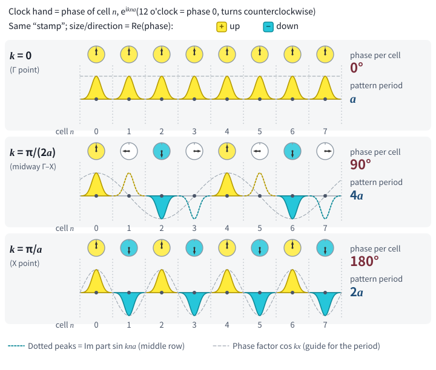
In the middle row of Figure C.2, the hills at $n=1,3$ are dotted not because the electron is absent, but simply because in those cells the real part is 0 and the imaginary part (dotted) is at its maximum. The sum of the square of the real part and the square of the imaginary part (the probability density) takes the same value in every cell (see the Caution box in C.2.2).
▶ You can check this figure by moving the slider in the viewer of C.8 (the “phase pattern” tab). Trying it first will make the explanation that follows easier.
C.2.2 Fractional coordinates of $\kk$ and the angle the hand turns
In a three-dimensional crystal, we write the wave vector in fractional coordinates $(k_1,k_2,k_3)$ using the primitive reciprocal lattice vectors $\bb_1,\bb_2,\bb_3$.
$$ \kk=k_1\bb_1+k_2\bb_2+k_3\bb_3 $$For the simple cubic lattice (lattice constant $a$), $\bb_i=(2\pi/a)\hat{\bm e}_i$, so $\kk=\dfrac{2\pi}{a}(k_1,k_2,k_3)$. Then the phase factor for a lattice vector $\RR=n_1\aa_1+n_2\aa_2+n_3\aa_3$ ($n_i$ are integers) can be written in terms of the fractional coordinates alone, as follows.
Derivation: Writing the phase factor $\ee^{\ii\kk\cdot\RR}$ in fractional coordinates
The definition of the reciprocal lattice (Chapter 3) is $\aa_i\cdot\bb_j=2\pi\delta_{ij}$. Using this, we expand $\kk\cdot\RR$.
$$ \kk\cdot\RR=\Bigl(\sum_{j}k_j\bb_j\Bigr)\cdot\Bigl(\sum_{i}n_i\aa_i\Bigr)=\sum_{i,j}k_jn_i\,(\bb_j\cdot\aa_i)=\sum_{i,j}k_jn_i\,2\pi\delta_{ij}=2\pi\,(k_1n_1+k_2n_2+k_3n_3) $$Therefore
$$ \ee^{\ii\kk\cdot\RR}=\exp\!\bigl[2\pi\ii\,(k_1n_1+k_2n_2+k_3n_3)\bigr] $$holds. Advancing one cell in the $a_1$ direction turns the phase by $2\pi k_1$, advancing one cell in the $a_2$ direction turns it by $2\pi k_2$, and advancing one cell in the $a_3$ direction turns it by $2\pi k_3$. In other words, the fractional coordinate $k_i$ is the angle by which the hand turns when we advance one cell in the $\aa_i$ direction, measured in units of $360^\circ$.
Table C.1 shows, for representative values of $k_i$, the angle the hand turns and the period of the pattern. The period column gives the number of cells after which the phase pattern returns to itself, and it equals the denominator of the fraction $k_i$ (if $k_i=p/q$, then $q$ cells).
| $k_i$ | Phase per cell $2\pi k_i$ | Rotation of the hand | Period of the pattern (number of cells) | Remarks |
|---|---|---|---|---|
| $0$ | $0$ | $0^\circ$ | 1 | Direction of the $\Gamma$ point (all cells the same) |
| $\tfrac14$ | $\pi/2$ | $90^\circ$ | 4 | Midpoint of $\Gamma$–$X$ |
| $\tfrac13$ | $2\pi/3$ | $120^\circ$ | 3 | Exercise C.1 |
| $\tfrac12$ | $\pi$ | $180^\circ$ | 2 | $X$ point (opposite to the neighbor) |
| $\tfrac34$ | $3\pi/2$ | $270^\circ$ ($=-90^\circ$) | 4 | Same state as $k_i=-\tfrac14$ |
| $1$ | $2\pi$ | $360^\circ=0^\circ$ | 1 | Same state as $k_i=0$ (differs only by a reciprocal lattice vector) |
The last two rows of the table are important. The phase returns to itself after $360^\circ$, so $k_i$ and $k_i+1$ (that is, $\kk$ and $\kk+\GG$) denote the same state. This is the meaning of the “reduced-zone scheme” and the “repeated-zone scheme” that we saw in Chapter 16, §16.6, and it is the reason why it suffices to consider $\kk$ only inside the first Brillouin zone.
Derivation: $\kk$ and $\kk+\GG$ are the same state
Let $\GG$ be a reciprocal lattice vector; that is, $\GG=m_1\bb_1+m_2\bb_2+m_3\bb_3$ ($m_i$ are integers). We compare the phase factors for a lattice vector $\RR$.
$$ \ee^{\ii(\kk+\GG)\cdot\RR}=\ee^{\ii\kk\cdot\RR}\,\ee^{\ii\GG\cdot\RR}=\ee^{\ii\kk\cdot\RR}\exp\!\bigl[2\pi\ii\,(m_1n_1+m_2n_2+m_3n_3)\bigr]=\ee^{\ii\kk\cdot\RR} $$The last equality holds because $m_in_i$ are integers, so $\exp[2\pi\ii\times\text{integer}]=1$. Since the phase factors are equal for all lattice vectors $\RR$, $\kk$ and $\kk+\GG$ equally satisfy the property required by Bloch's theorem \eqref{eq:C-bloch}. That is, the direction of the hand in each cell is exactly the same.
Caution: $\abs{\psi}^2$ is periodic, and $\kk$ does not appear in the density
Taking the square of the absolute value of Eq. \eqref{eq:C-bloch}, and using $\abs{\ee^{\ii\kk\cdot\RR}}^2=1$, we obtain
$$ \abs{\psi_{\kk}(\rr+\RR)}^2=\abs{\psi_{\kk}(\rr)}^2 $$That is, the probability density of the electron repeats with the same period as the crystal, in a state of any $\kk$. What $\kk$ affects is not the probability density but the phase of the wave function. The phase matters only when the wave functions of neighboring cells add together (interference). This interference determines whether neighbors reinforce each other (bonding) or cancel each other (antibonding), and that gives rise to the differences in the energy $E_n(\kk)$. This is the idea that we use in all the sections that follow.
$\kk$ is not a momentum
For a free electron, $\psi=\ee^{\ii\kk\cdot\rr}$ is an eigenstate of the momentum operator $-\ii\hbar\nabla$, and the eigenvalue $\hbar\kk$ is the true momentum (Chapter 15). A Bloch state $\psi_{\kk}=\ee^{\ii\kk\cdot\rr}u_{\kk}(\rr)$ in a crystal ($u_{\kk}$ is a function with the same period as the lattice) is not an eigenstate of momentum unless $u_{\kk}$ is constant. $\hbar\kk$ is called the crystal momentum, but in essence it is “a label for the phase under a shift by $\RR$.” Indeed, since $\kk$ and $\kk+\GG$ are the same state, $\kk$ cannot possibly be a uniquely defined momentum.
Chapter 11, §11.3 says the same thing in the language of group theory ($\kk$ is the label that specifies an irreducible representation of the translation group). The sign $-$ in the representation matrix $D^{(\kk)}(\{E|\RR\})=\ee^{-\ii\kk\cdot\RR}$ of Chapter 11 comes from the convention in the definition of translation, $\hat P f(\rr)=f(\rr-\RR)$, and the content is the same as Eq. \eqref{eq:C-bloch}.
C.2.3 States that can be chosen real, and traveling waves
At $k=0$ and $k=\pi/a$, the phase factor is a real number $\pm1$, so the entire wave function can be chosen real (the first and third rows of Figure C.2). At $k=\pi/(2a)$, on the other hand, the phase factor is complex, $1,\ii,-1,-\ii,\dots$, and the wave function must be complex. This difference is determined by the following condition.
Physical Meaning: Points where the state can be chosen real and standing waves, general points and traveling waves
The states at $\kk$ and $-\kk$ have the same energy. The condition for them to be the same state is $\kk\equiv-\kk$ (equal up to a reciprocal lattice vector), which is equivalent to $2\kk$ being a reciprocal lattice vector. In the simple cubic lattice, the eight points where every $k_i$ is $0$ or $\tfrac12$ satisfy this. They are $\Gamma$, $X$ (three of them), $M$ (three of them), and $R$ (Section C.3). At these points the phase factor takes only the values $\pm1$, and the wave function can be chosen real (in general, the complex conjugate of $\psi_{\kk}$ is the state at $-\kk$, so at a point with $\kk\equiv-\kk$ both $\mathrm{Re}\,\psi$ and $\mathrm{Im}\,\psi$ are states at that point). A real wave function is a standing wave, whose nodes do not move even when it is multiplied by the time factor $\ee^{-\ii\omega t}$ (the same as the standing waves at the zone boundary in Chapter 13, §13.4 and Chapter 16, §16.1).
At a general $\kk$, $\ee^{\ii\kk\cdot\RR}$ is complex, and $\psi_{\kk}$ becomes a traveling wave whose phase moves through space, like $\ee^{\ii(\kk\cdot\rr-\omega t)}$. $\psi_{\kk}$ and $\psi_{-\kk}$ are complex conjugates of each other and have the same energy. Taking the linear combinations $\psi_{\kk}\pm\psi_{-\kk}$ of these two, we can construct real standing waves, but these are not states of $\kk$; they are states in which $\kk$ and $-\kk$ are mixed.
Example C.1: The phase pattern for $\kk=(\tfrac14,0,0)$
For the state with $\kk=\dfrac{2\pi}{a}\bigl(\tfrac14,0,0\bigr)$ in the simple cubic lattice, answer the following: (1) the phase acquired on advancing one cell in each direction, (2) the phase factor of the cell $\RR=(n_1,n_2,n_3)$, (3) the period of the pattern, and (4) whether the wave function can be chosen real.
Solution: (1) The phase $2\pi k_i$ is $2\pi\cdot\tfrac14=\pi/2$ ($90^\circ$) in the $a_1$ direction and $0$ in the $a_2$ and $a_3$ directions. (2) Using the formula,
$$ \ee^{\ii\kk\cdot\RR}=\exp\!\Bigl[2\pi\ii\Bigl(\tfrac14n_1+0\cdot n_2+0\cdot n_3\Bigr)\Bigr]=\ee^{\ii\pi n_1/2}=\ii^{\,n_1} $$For $n_1=0,1,2,3,4$ this gives $1,\ \ii,\ -1,\ -\ii,\ 1$. The real part $\cos(\pi n_1/2)$ is $1,0,-1,0,1,\dots$; for example, the phase factor of $\RR=(2,1,0)$ is $\ii^2=-1$, and that of $\RR=(3,5,2)$ is $\ii^3=-\ii$. (3) The phase returns to its original value when $n_1$ increases by 4, so the pattern has a period of four cells ($4a$) in the $a_1$ direction. In the $a_2$ and $a_3$ directions the same phase continues. (4) $-\kk=(-\tfrac14,0,0)$ is not equal to $\kk$, even up to a reciprocal lattice vector ($2\kk=(\tfrac12,0,0)\cdot\tfrac{2\pi}{a}$ is not a reciprocal lattice vector). Therefore the phase factor is a complex number, and the wave function cannot be chosen real. It is a traveling wave (second row of Figure C.2).
▶ Move the $\kk$ of Example C.1 in the viewer of C.8 and check how the arrow and the pattern change.
C.3 The Brillouin Zone of the Simple Cubic Lattice and $\Gamma$, $X$, $M$, $R$
What this section shows: In the simple cubic lattice, the four points $\Gamma$, $X$, $M$, $R$ that appear in band diagrams are the points where the phase pattern is “all the same,” “alternating in one direction,” “alternating in two directions,” and “alternating in three directions.” We look at these patterns and summarize their periods and symmetries (little co-groups) in a table.
C.3.1 The Brillouin zone and the high-symmetry points
The reciprocal lattice of the simple cubic lattice (lattice constant $a$) is a simple cubic lattice of side $2\pi/a$, and the first Brillouin zone is also a cube of side $2\pi/a$ (Chapter 3, Section 3.7). The cubic phase of $\mathrm{SrTiO_3}$ forms a simple cubic lattice (the five atoms Sr, Ti, and O fit in one cell), so we use this Brillouin zone as it is. Figure C.3 shows the four high-symmetry points used in band diagrams.
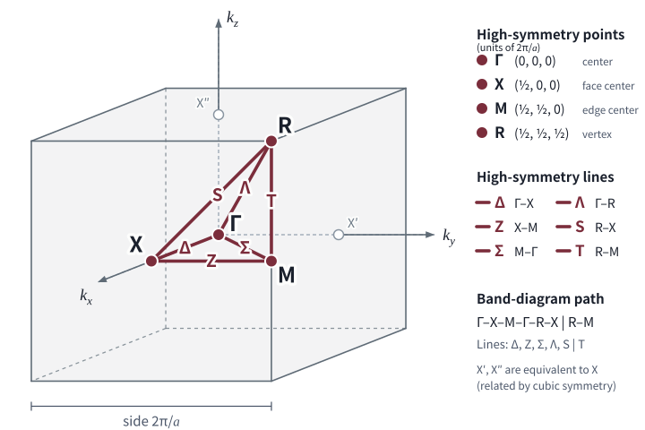
Symbols of the high-symmetry lines and the representative of the $X$ point (may be skipped)
The path in Figure C.3 is the same as in Figure C.1: $\Gamma$–$X$–$M$–$\Gamma$–$R$–$X\,|\,R$–$M$. The high-symmetry line in each segment has a symbol: $\Gamma$–$X$ is $\Delta$, $X$–$M$ is $Z$, $M$–$\Gamma$ is $\Sigma$, $\Gamma$–$R$ is $\Lambda$, $R$–$X$ is $S$, and $R$–$M$ is $T$ (in the output of CrystOD, $\Delta$, $\Sigma$, and $\Lambda$ are displayed as DT, SM, and LD). This appendix uses only $\Delta$ (C.6.5) and $\Lambda$ (Example C.2).
Under cubic symmetry, $(\tfrac12,0,0)$, $(0,\tfrac12,0)$, and $(0,0,\tfrac12)$ are equivalent points that are mapped onto one another, and this appendix uses $X=(\tfrac12,0,0)$ as the representative. The $X$ of CrystOD's crystod-bz and of the level viewer (C.6.6) is $(0,\tfrac12,0)$; the energies, degeneracies, and symmetries are the same (only the roles of $x$ and $y$ are interchanged). The --kpoint 0.5 0 0 in the command example of C.6.2 corresponds to $(\tfrac12,0,0)$.
C.3.2 The phase pattern: seeing it in a figure
Figure C.4 shows $2\times2\times2$ cells arranged with gaps between them, with the sign of the real part of the phase factor $\ee^{\ii\kk\cdot\RR}$ of each cell colored yellow ($+$) and cyan ($-$). At $\Gamma$, $X$, $M$, and $R$ the phase factor takes only the values $\pm1$, so the pattern can be drawn completely with these two colors.
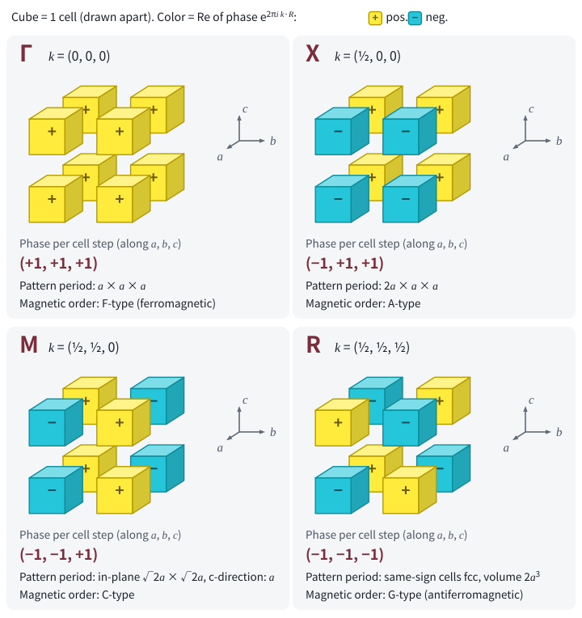
Figure C.4 is the most important figure in this appendix. Please keep the following four pictures in mind.
- $\Gamma$: every cell is the same. “All yellow.”
- $X$ ($\tfrac12,0,0$): the sign flips each time we advance one cell in the $a$ direction. It is the same in the $b$ and $c$ directions. A layered stripe pattern.
- $M$ ($\tfrac12,\tfrac12,0$): the sign flips in both the $a$ and $b$ directions. The $ab$ plane is a checkerboard, and it is the same in the $c$ direction (columns of the checkerboard extend in the $c$ direction).
- $R$ ($\tfrac12,\tfrac12,\tfrac12$): the sign flips in all three directions. A three-dimensional checkerboard (an arrangement resembling the rock-salt type).
Table C.2 summarizes the properties of these points.
| Point | $\kk$ (fractional) | Phase on advancing one cell $(a,b,c)$ | Period of the phase pattern | Magnetic order (example) |
|---|---|---|---|---|
| $\Gamma$ | $(0,0,0)$ | $(+1,+1,+1)$ | $a\times a\times a$ | F-type (ferromagnetic) |
| $X$ | $(\tfrac12,0,0)$ | $(-1,+1,+1)$ | $2a\times a\times a$ | A-type |
| $M$ | $(\tfrac12,\tfrac12,0)$ | $(-1,-1,+1)$ | in the plane $\sqrt2a\times\sqrt2a$, $a$ in the $c$ direction | C-type |
| $R$ | $(\tfrac12,\tfrac12,\tfrac12)$ | $(-1,-1,-1)$ | cells of the same sign form an fcc lattice (primitive cell volume $2a^3$) | G-type (antiferromagnetic) |
Below the table we add two terms to be used later. The little co-group of each point is the set of symmetry operations that leave that $\kk$ unchanged (or move it only by a reciprocal lattice vector), and it determines how much degeneracy the states at that point can have (Chapter 11, Section 11.5, Section 11.6). At $\Gamma$ and $R$ all the symmetries of the cube ($O_h$, 48 elements) remain, so threefold degeneracy appears (the $t_{2g}$ at $\Gamma$ and the top of the valence band at $R$), while at $X$ and $M$ the group is reduced to $D_{4h}$ (16 elements), so at most twofold degeneracy occurs. The set of equivalent $\kk$ points that are mapped onto one another by the operations of cubic symmetry is called the star, and the number of its arms is three for $X$ ($(\tfrac12,0,0)$, $(0,\tfrac12,0)$, $(0,0,\tfrac12)$), three for $M$ as well, and one for $\Gamma$ and $R$.
Let us focus on the volume of the lattice formed by the cells of the same sign. The period of the $X$ pattern is $2a\times a\times a$ (volume $2a^3$), that of $M$ is $\sqrt2a\times\sqrt2a$ in the plane and $a$ in the $c$ direction (volume $2a^3$), and that of $R$ is the fcc primitive cell (volume $2a^3$). At every one of the points $X$, $M$, and $R$, the primitive cell of the “new period” that includes the phase pattern is exactly twice the original cell (volume $2a^3$). This is because at a point with $\kk=\tfrac12\bm G_i$ ($\bm G_i$ is a reciprocal lattice vector) the phase factor is $\pm1$ and the period is stretched by a factor of two. This is directly connected to the doubling of the unit cell when the rotation of the oxygen octahedra freezes in Section C.7.
Derivation: $(\tfrac12,0,0)$ and $(-\tfrac12,0,0)$ are the same state
We find the phase factors of $\kk_+=\dfrac{2\pi}{a}\bigl(\tfrac12,0,0\bigr)$ and $\kk_-=\dfrac{2\pi}{a}\bigl(-\tfrac12,0,0\bigr)$ at the cell $\RR=(n_1,n_2,n_3)a$.
$$ \ee^{\ii\kk_+\cdot\RR}=\exp\!\Bigl[2\pi\ii\cdot\tfrac12n_1\Bigr]=\ee^{\ii\pi n_1}=(-1)^{n_1} $$ $$ \ee^{\ii\kk_-\cdot\RR}=\exp\!\Bigl[2\pi\ii\cdot\bigl(-\tfrac12\bigr)n_1\Bigr]=\ee^{-\ii\pi n_1}=(-1)^{n_1} $$Here we used $\ee^{\pm\ii\pi n_1}=\cos\pi n_1\pm\ii\sin\pi n_1=\cos\pi n_1=(-1)^{n_1}$ (since $n_1$ is an integer, $\sin\pi n_1=0$). Because the phase factors are equal in every cell, $\kk_+$ and $\kk_-$ refer to the same state. In general, at a point where $2\kk$ is a reciprocal lattice vector ($\kk\equiv-\kk$), the phase factor $\ee^{\ii\kk\cdot\RR}$ equals $\ee^{-\ii\kk\cdot\RR}$ (its complex conjugate), so it is a real number $\pm1$.
In the simple cubic lattice there are $2^3=8$ combinations with $k_i\in\{0,\tfrac12\}$, which divide into $\Gamma$ (one), $X$ (three), $M$ (three), and $R$ (one). Within the first Brillouin zone, $\kk$ and $-\kk$ coincide only at these eight points (the wave vectors invariant under time reversal).
Correspondence with magnetic order (as an example)
In a ferromagnet or an antiferromagnet, if we write the spin direction at each lattice point as $+1$ or $-1$, the arrangement is the same as the phase pattern of Figure C.4. $\Gamma$ has all spins in the same direction (F-type, ferromagnetic), $X$ alternates in one direction (A-type), $M$ alternates in two directions (C-type), and $R$ alternates in three directions (G-type, a three-dimensional checkerboard). Specifying the period $\kk$ of a magnetic order (for example $(\tfrac12,\tfrac12,\tfrac12)$) means specifying that the sign of the spin changes from cell to cell as $\ee^{\ii\kk\cdot\RR}$. The “phase pattern” in this appendix says the same thing about the sign of the wave function for electrons and phonons. See Chapter 20 on magnetism.
▶ The four points of Figure C.4 can be viewed with the buttons $\Gamma$, $X$, $M$, $R$ of the viewer of C.8, and moving from $\Gamma$ to $X$ with the slider shows how the period of the pattern lengthens.
C.4 The Bloch Sum of $s$ Orbitals — Counting Bonding and Antibonding
What this section shows: In the simplest case (one $s$ orbital per cell), the energy of a Bloch state can be found just by counting “how many neighbor pairs are bonding and how many are antibonding.” This way of counting carries over unchanged to $p$ orbitals (Section C.5) and $d$ orbitals (Section C.6). We will check the counted result with equations later (C.4.3).
C.4.1 The Bloch sum
Suppose there is one $s$ orbital $\phi(\rr-\RR)$ in each cell (lattice point $\RR$). The sum of these orbitals with the phase $\ee^{\ii\kk\cdot\RR}$ as the coefficients is called a Bloch sum (the same as in the tight-binding approximation of Chapter 18, Section 18.4).
Here $N$ is the number of cells. This is the “stamp” $\phi$ within the cell, “pressed” into each cell after multiplying by the phase $\ee^{\ii\kk\cdot\RR}$ (there is only one kind of orbital, so the stamp does not depend on $\kk$). We will check in C.4.3 that this satisfies Bloch's theorem.
C.4.2 Counting bonding and antibonding pairs
Let us look at the relation between two neighboring atoms in the Bloch sum \eqref{eq:C-blochsum}. If the coefficient of the central atom is $1$, the coefficient of the neighboring atom at position $\bm\rho$ is $\ee^{\ii\kk\cdot\bm\rho}$. At $\Gamma$, $X$, $M$, and $R$, this ratio is either $+1$ or $-1$.
- Ratio $+1$: the same sign as the neighbor. The wave function does not cancel as it continues into the neighbor. This is a bonding pair, and the energy is lowered by $t$. Here $t$ is the energy contribution when neighboring $s$ orbitals overlap with the same sign, and $t<0$ (it is the $-\gamma$ of Chapter 18; why it is negative is explained in C.4.3).
- Ratio $-1$: the opposite sign to the neighbor. The wave function changes sign as it passes to the neighbor, and a node forms in between. This is an antibonding pair, and its contribution is $-t$ ($>0$), so the energy is raised.
Therefore, if among the six nearest-neighbor pairs emanating from the central atom there are $m$ bonding pairs and $n$ antibonding pairs, then, with $\epsilon_s$ the level of the $s$ orbital,
$$ E=\epsilon_s+(m-n)\,t,\qquad m+n=6 $$holds. Figure C.5 shows the sign pattern of the $s$ orbitals at the four points and the bonding and antibonding pairs.

| Point | $\kk$ (fractional) | Bonding $m$ | Antibonding $n$ | $E-\epsilon_s$ | $(E-\epsilon_s)/\abs{t}$ for $t=-1$ |
|---|---|---|---|---|---|
| $\Gamma$ | $(0,0,0)$ | 6 | 0 | $6t$ | $-6$ (lowest) |
| $X$ | $(\tfrac12,0,0)$ | 4 | 2 | $2t$ | $-2$ |
| $M$ | $(\tfrac12,\tfrac12,0)$ | 2 | 4 | $-2t$ | $+2$ |
| $R$ | $(\tfrac12,\tfrac12,\tfrac12)$ | 0 | 6 | $-6t$ | $+6$ (highest) |
Check that the counts in Table C.3 can be read off the picture in Figure C.5. At $X$, only the two neighbors in the $a$ direction (the direction along which the coefficients alternate in sign) are antibonding, and the four in the $b$ and $c$ directions are bonding. At $M$ the four in the $a$ and $b$ directions are antibonding, and at $R$ all six are antibonding.
▶ In the viewer of C.8 (choose $s$ in the tab “Bloch sum of orbitals”), you can count the green lines and red lines at $\Gamma$, $X$, $M$, and $R$ and compare them with Table C.3.
C.4.3 Checking with equations
We now check with equations the result read off from the pictures so far. We first check that the Bloch sum satisfies Bloch's theorem, and then derive the energy. You can go on without following the equations.
Derivation: The Bloch sum \eqref{eq:C-blochsum} satisfies Bloch's theorem
Shift $\rr$ by a lattice vector $\RR'$ and substitute into Eq. \eqref{eq:C-blochsum}.
$$ \psi_{\kk}(\rr+\RR')=\frac{1}{\sqrt N}\sum_{\RR}\ee^{\ii\kk\cdot\RR}\,\phi(\rr+\RR'-\RR) $$Change the summation variable to $\RR''=\RR-\RR'$ (as $\RR$ runs over all lattice vectors, $\RR''$ also runs over all lattice vectors; periodic boundary conditions are assumed). Since $\RR=\RR''+\RR'$,
$$ \psi_{\kk}(\rr+\RR')=\frac{1}{\sqrt N}\sum_{\RR''}\ee^{\ii\kk\cdot(\RR''+\RR')}\,\phi(\rr-\RR'')=\ee^{\ii\kk\cdot\RR'}\cdot\frac{1}{\sqrt N}\sum_{\RR''}\ee^{\ii\kk\cdot\RR''}\phi(\rr-\RR'')=\ee^{\ii\kk\cdot\RR'}\,\psi_{\kk}(\rr) $$and the three-dimensional version of Eq. \eqref{eq:C-bloch} holds. The phase factor $\ee^{\ii\kk\cdot\RR}$ is the “phase that multiplies the whole function when it is shifted.”
The energy is given by $E(\kk)=\bra{\psi_{\kk}}\Ham\ket{\psi_{\kk}}$. Here we use the same approximations as in Chapter 18, Section 18.4: (i) we neglect the overlap integrals of $s$ orbitals in different cells (we regard $\langle\phi_{\RR}|\phi_{\RR'}\rangle=\delta_{\RR\RR'}$), and (ii) we keep only the nearest-neighbor hopping integrals.
Derivation: The tight-binding band of the $s$ orbital
Substituting Eq. \eqref{eq:C-blochsum} gives
$$ E(\kk)=\frac1N\sum_{\RR,\RR'}\ee^{-\ii\kk\cdot\RR}\,\ee^{\ii\kk\cdot\RR'}\,\bra{\phi_{\RR}}\Ham\ket{\phi_{\RR'}} $$(here we have abbreviated $\phi_{\RR}(\rr)=\phi(\rr-\RR)$). Since $\Ham$ is invariant under lattice translations, the matrix element is determined only by the relative position $\bm\rho=\RR'-\RR$ of the two cells.
$$ \bra{\phi_{\RR}}\Ham\ket{\phi_{\RR+\bm\rho}}\equiv h(\bm\rho) $$Fix $\RR$ and sum over $\bm\rho$. The sum over $\RR$ then just adds $N$ identical terms, so that $\frac1N\sum_{\RR}=1$. Therefore
$$ E(\kk)=\sum_{\bm\rho}\ee^{\ii\kk\cdot\bm\rho}\,h(\bm\rho) $$The term with $\bm\rho=0$ is the level of the $s$ orbital (in the crystal), $h(0)\equiv\epsilon_s$. For $\bm\rho\neq0$, we keep only the six nearest neighbors; since they are equivalent, we let them have the same value, $h(\pm a\hat{\bm x})=h(\pm a\hat{\bm y})=h(\pm a\hat{\bm z})\equiv t$. In the region where the $s$ orbitals overlap, the orbitals have the same sign and the attractive potential of the nucleus is negative, so $t<0$ (this corresponds to the $-\gamma$ of Chapter 18). Then
$$ E(\kk)=\epsilon_s+t\left(\ee^{\ii k_xa}+\ee^{-\ii k_xa}+\ee^{\ii k_ya}+\ee^{-\ii k_ya}+\ee^{\ii k_za}+\ee^{-\ii k_za}\right) $$Using $\ee^{\ii\theta}+\ee^{-\ii\theta}=2\cos\theta$ three times, we obtain
This is the same equation as the one written in the notation of Chapter 18 with $\epsilon_s=-\alpha$ and $t=-\gamma$ (the simple cubic lattice of Chapter 18, Section 18.4.3).
Let us check directly from Eq. \eqref{eq:C-sband}. At $X$, $\cos k_xa=\cos\pi=-1$ and $\cos k_ya=\cos k_za=1$, so $E=\epsilon_s+2t(-1+1+1)=\epsilon_s+2t$. At $M$, $\cos k_xa=\cos k_ya=-1$ and $\cos k_za=1$, so $E=\epsilon_s+2t(-1-1+1)=\epsilon_s-2t$. At $R$ all three are $-1$, so $E=\epsilon_s-6t$. These agree with the results of the counting (Table C.3). The difference between the bottom of the band ($\Gamma$) and the top ($R$) is $12\abs{t}$ (the bandwidth).
C.4.4 The whole $s$ band
Figure C.6 shows this $s$ band along the same path as in Figure C.1.
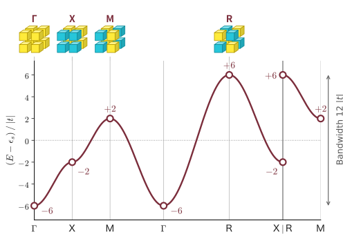
In Figure C.6, the slope of the curve (the group velocity) is $0$ at each of $\Gamma$, $X$, $M$, and $R$. This is not an accident. As we saw in Section C.2, at these points the wave function is a real standing wave, in which the rightward and leftward waves are superposed with equal weight. Because $E(\kk)$ is invariant under $\kk\to-\kk$ and also under $\kk\to\kk+\GG$, at these four points (the points with $\kk\equiv-\kk$) we have $\nabla_{\kk}E=0$ in every direction.
Example C.2: Energy at the midpoint $\kk=(\tfrac14,\tfrac14,\tfrac14)$ of the $\Lambda$ line
Find the energy of the $s$ band \eqref{eq:C-sband} at $\kk=\dfrac{2\pi}{a}\bigl(\tfrac14,\tfrac14,\tfrac14\bigr)$ (the midpoint of the $\Gamma$–$R$ line), and describe the phase pattern of this state and how it corresponds to the counting of bonding and antibonding pairs ($m$, $n$).
Solution. Since $k_ia=2\pi\cdot\tfrac14=\pi/2$, we have $\cos k_ia=\cos(\pi/2)=0$. From Eq. \eqref{eq:C-sband},
$$ E=\epsilon_s+2t\,(0+0+0)=\epsilon_s $$That is, this is the center of the band (midway between $\epsilon_s+6t$ at $\Gamma$ and $\epsilon_s-6t$ at $R$). The phase pattern rotates by $90^\circ$ with each cell advanced in each direction (period of four cells). Seen from the central atom, the phase of the neighbor on the $+x$ side is $\ee^{\ii\pi/2}=\ii$ and that on the $-x$ side is $\ee^{-\ii\pi/2}=-\ii$; they are shifted by $90^\circ$ in opposite directions. Therefore the contributions of the $+x$ and $-x$ sides, $t(\ii+(-\ii))=0$, cancel each other. The same holds for the $y$ and $z$ directions. Because the phases are not $\pm1$, the pairs cannot be sharply classified as “bonding” or “antibonding”; the six pairs are intermediate between bonding and antibonding (pairs whose phases are shifted by $90^\circ$), and the net result corresponds to $m-n=0$. A pair with a general phase angle $\theta$ contributes $2t\cos\theta$ ($\theta=0$ is bonding, $\theta=\pi$ is antibonding, and $\theta=\pi/2$ is exactly in between). This state has a complex wave function and is a traveling wave propagating in the $[111]$ direction.
C.5 $p$ Orbitals — Multiplying the Orbital's Own Sign by the Bloch Phase
What this section shows: A $p$ orbital has a $+$ lobe and a $-$ lobe, so whether neighboring orbitals are bonding or antibonding is determined by the product of “the direction of the orbital's own sign” and “the Bloch phase ($\pm1$).” Read from the picture (Figure C.7(a)), the lowest point of the $p_x$ band is at $X$, not at $\Gamma$. The picture also shows why the degeneracy at $X$ splits into $p_x$ (single) and $(p_y,p_z)$ (twofold). The equations are used later, to check what we read from the picture (C.5.3).
C.5.1 Signs of $\sigma$ and $\pi$ bonds
Place a $p_x$ orbital (the lobe on the $+x$ side is $+$, the lobe on the $-x$ side is $-$) at each lattice point, and, in the same way as for the $s$ orbital, form the Bloch sum $\psi_{\kk}=N^{-1/2}\sum_{\RR}\ee^{\ii\kk\cdot\RR}\,p_x(\rr-\RR)$. The difference from the $s$ orbital is that, depending on the direction toward the neighbor, the overlap of the orbitals falls into two types.
- $\sigma$ type (neighbor in the $x$ direction): the $p_x$ orbitals line up on the $x$ axis. When they are placed side by side with the same coefficient ($+1$), the $+$ lobe of the left orbital faces the $-$ lobe of the right orbital. Because the facing lobes have opposite signs, a node forms in the overlap region, and the interaction is antibonding. The matrix element is positive: $V_{pp\sigma}>0$.
- $\pi$ type (neighbor in the $y$ or $z$ direction): with a neighbor on the $y$ axis, the $p_x$ lobes lie side by side. With the same coefficient, a $+$ lobe comes next to a $+$ lobe and a $-$ lobe next to a $-$ lobe. Because lobes of the same sign sit next to each other, the interaction is bonding, as for the $s$ orbital. The matrix element is negative: $V_{pp\pi}<0$.
Below we abbreviate $V_\sigma\equiv V_{pp\sigma}>0$ and $V_\pi\equiv V_{pp\pi}<0$. This pair of signs ($V_{pp\sigma}>0$, $V_{pp\pi}<0$) is the standard convention of the Slater–Koster tables (see the references of Chapter 18). The values are parameters of the model, not calculated values. In the examples of this section we use $V_\sigma=+1$ and $V_\pi=-0.25$.
How to tell bonding from antibonding (three steps)
(1) For the direction toward the neighbor, read the signs of the facing (or side-by-side) lobes when the coefficients are equal ($\sigma$: facing lobes have opposite signs; $\pi$: side-by-side lobes have the same sign). (2) Multiply by the Bloch phase factor (the $\pm1$ acquired on moving to the neighbor in that direction). If the phase factor is $-1$, the signs of all the neighboring orbitals are reversed, so the conclusion of (1) is reversed. (3) If the facing lobes have the same sign, the interaction is bonding; if they have opposite signs, it is antibonding.
C.5.2 Reading the $p_x$ states at $\Gamma$, $X$, and $X'$ from the picture
Figure C.7(a) shows the layer $z=0$ seen from above, with $4\times3$ $p_x$ orbitals arranged in it. The Bloch coefficient $\pm1$ of each cell has been applied, and in cells whose coefficient is $-1$ the colors of the lobes are drawn reversed. From the signs of the facing lobes, colored lines indicate whether the neighbors in the $x$ direction ($\sigma$) and in the $y$ direction ($\pi$) are bonding or antibonding.

Let us read the three panels of Figure C.7(a) with the three steps of C.5.1. Below, the energy is measured as $E-\epsilon_p$ with $V_\sigma=1$ and $V_\pi=-0.25$.
- $\Gamma$ $(0,0,0)$: The coefficient is $+1$ in every cell. For the neighbors in the $x$ direction ($\sigma$), a $+$ lobe faces a $-$ lobe (antibonding, $+2V_\sigma$). For the neighbors in the $y$ direction ($\pi$), lobes of the same sign sit side by side (bonding; the same holds for the neighbors in the $z$ direction, giving $4V_\pi$ in total). Hence $E-\epsilon_p=2V_\sigma+4V_\pi=2-1=+1$.
- $X$ $(\tfrac12,0,0)$: The coefficients alternate along the $x$ direction ($+1,-1,+1,\dots$). Since the neighbor's coefficient is $-1$, the facing lobes have the same sign, and $\sigma$ becomes bonding ($-2V_\sigma$). Along the $y$ and $z$ directions the coefficients are equal, so $\pi$ is bonding ($4V_\pi$). Hence $E-\epsilon_p=-2V_\sigma+4V_\pi=-2-1=-3$. This is the lowest point of the $p_x$ band.
- $X'$ $(0,\tfrac12,0)$: The coefficients alternate along the $y$ direction. Along the $x$ direction the coefficients are equal, so $\sigma$ is antibonding ($+2V_\sigma$). Along the $y$ direction the coefficients alternate, so the character of $\pi$ is reversed and it becomes antibonding ($-2V_\pi$), but along the $z$ direction the coefficients are equal and it is bonding ($+2V_\pi$), so the two $\pi$ contributions cancel each other. Hence $E-\epsilon_p=2V_\sigma+2V_\pi(-1+1)=+2$.
C.5.3 Checking with equations
We now check the energies read from Figure C.7(a) with equations. You can go on without following the equations.
Derivation: The $p_x$ band of the simple cubic lattice
By the same procedure as in Section C.4, we obtain $E(\kk)=\sum_{\bm\rho}\ee^{\ii\kk\cdot\bm\rho}\,h(\bm\rho)$. Here $h(\bm\rho)=\bra{p_x(\rr)}\Ham\ket{p_x(\rr-\bm\rho)}$ (we neglect the overlap integral and keep only the nearest neighbors). From the $\sigma$ and $\pi$ classification above, the values for the six nearest neighbors are
$$ h(\pm a\hat{\bm x})=V_\sigma,\qquad h(\pm a\hat{\bm y})=h(\pm a\hat{\bm z})=V_\pi $$As for the $s$ orbital, using $\ee^{\ii\theta}+\ee^{-\ii\theta}=2\cos\theta$, we obtain
The $p_y$ and $p_z$ bands are obtained by cyclically permuting the subscripts: $E_{p_y}=\epsilon_p+2V_\sigma\cos k_ya+2V_\pi(\cos k_za+\cos k_xa)$ and $E_{p_z}=\epsilon_p+2V_\sigma\cos k_za+2V_\pi(\cos k_xa+\cos k_ya)$.
$p_x$, $p_y$, and $p_z$ do not mix. The matrix element $\bra{p_x}\Ham\ket{p_y(\rr-\bm\rho)}$ between $p_x$ and $p_y$ is 0 for all six nearest-neighbor $\bm\rho$. For example, for $\bm\rho=a\hat{\bm x}$, under reflection in the plane $y\to-y$, $p_x$ is invariant (even) and $p_y$ changes sign (odd). Since $\Ham$ is invariant under reflection, the matrix element between an even and an odd function vanishes. For $\bm\rho=a\hat{\bm y}$ or $a\hat{\bm z}$ the same argument can be made with the plane $x\to-x$ ($p_x$ is odd and $p_y$ is even). Hence the three $p$ bands can be written, as mutually independent “$s$-orbital-like bands,” by Eq. \eqref{eq:C-pxband}.
Eq. \eqref{eq:C-pxband} resembles the $s$-band equation, Eq. \eqref{eq:C-sband}, but the coefficient $V_\sigma$ in the $x$ direction differs from the coefficient $V_\pi$ in the $y$ and $z$ directions. Moreover, since $V_\sigma>0$, unlike the $s$ orbital ($t<0$), the points with $\cos k_xa=+1$ (such as $\Gamma$) are not the lowest.
Using Eq. \eqref{eq:C-pxband} gives the same values (at $X'$, $\cos k_ya=\cos\pi=-1$ and $\cos k_za=+1$, so $2V_\pi(-1+1)=0$). What we read from the picture agrees with the values from the equation.
Example C.3: Values of the $p_x$ band at the $M$ and $R$ points
Using Eq. \eqref{eq:C-pxband}, for $V_\sigma=1$ and $V_\pi=-0.25$, find the energies $E-\epsilon_p$ of $p_x$, $p_y$, and $p_z$ at $M=(\tfrac12,\tfrac12,0)$ and $R=(\tfrac12,\tfrac12,\tfrac12)$, and explain them in terms of bonding and antibonding.
Solution. At $M$, $\cos k_xa=\cos k_ya=-1$ and $\cos k_za=+1$.
$$ \begin{aligned} E_{p_x}-\epsilon_p&=2V_\sigma(-1)+2V_\pi\bigl[(-1)+(+1)\bigr]=-2\\ E_{p_y}-\epsilon_p&=2V_\sigma(-1)+2V_\pi\bigl[(+1)+(-1)\bigr]=-2\\ E_{p_z}-\epsilon_p&=2V_\sigma(+1)+2V_\pi\bigl[(-1)+(-1)\bigr]=2-4V_\pi=2+1=+3 \end{aligned} $$$p_x$ and $p_y$ have the same value ($-2$, twofold degenerate), and only $p_z$ is at $+3$ (single). In words: $p_z$ is antibonding for the neighbors in the $z$ direction ($\sigma$, equal coefficients; $+2V_\sigma$), and also antibonding for the neighbors in the $x$ and $y$ directions ($\pi$, alternating coefficients; $-4V_\pi=+1$), so it is the highest. For $p_x$, the neighbors in the $x$ direction ($\sigma$) are bonding because the coefficients alternate ($-2V_\sigma$), the neighbors in the $y$ direction ($\pi$) are antibonding because the coefficients alternate, and the neighbors in the $z$ direction ($\pi$) are bonding because the coefficients are equal; the two $\pi$ contributions cancel, giving $-2$.
At $R$, all three $\cos$ terms equal $-1$, so for each of $p_x$, $p_y$, and $p_z$ we have $E-\epsilon_p=-2V_\sigma-4V_\pi=-2+1=-1$. It is threefold degenerate.
C.5.4 The $p$ bands and how the degeneracy splits
Figure C.7(b) shows the three $p$ bands along the same path as in Figure C.6.
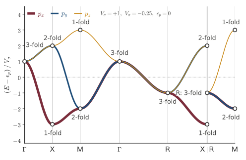
Table C.4 summarizes the values at $\Gamma$, $X$, $M$, and $R$ and the pattern of degeneracy.
| Point | $p_x$ | $p_y$ | $p_z$ | Pattern of degeneracy |
|---|---|---|---|---|
| $\Gamma$ $(0,0,0)$ | $+1$ | $+1$ | $+1$ | Threefold ($O_h$) |
| $X$ $(\tfrac12,0,0)$ | $-3$ | $+2$ | $+2$ | Single $p_x$ $+$ twofold $(p_y,p_z)$ ($D_{4h}$, principal axis $x$) |
| $M$ $(\tfrac12,\tfrac12,0)$ | $-2$ | $-2$ | $+3$ | Twofold $(p_x,p_y)$ $+$ single $p_z$ ($D_{4h}$, principal axis $z$) |
| $R$ $(\tfrac12,\tfrac12,\tfrac12)$ | $-1$ | $-1$ | $-1$ | Threefold ($O_h$) |
The reason for the degeneracy can be understood from the little co-group (Section C.3). The principal axis of the little co-group $D_{4h}$ of $X=(\tfrac12,0,0)$ is the $x$ axis, and a $90^\circ$ rotation about the principal axis interchanges $p_y$ and $p_z$. Orbitals that are carried into one another by this operation cannot help having the same energy, so $(p_y,p_z)$ is twofold degenerate, and only $p_x$, along the principal axis, has a different energy (single). At $M=(\tfrac12,\tfrac12,0)$ the principal axis is $z$, so $(p_x,p_y)$ is twofold and $p_z$ is single. At $\Gamma$ and $R$ the cubic symmetry ($O_h$) remains, and there are threefold rotations that interchange $x$, $y$, and $z$, so the states are threefold degenerate. The degree of degeneracy is determined by the dimension of the irreducible representation of the little co-group (Chapter 11, §11.6).
The next section brings two new things. (i) There are several atoms in one cell ($\mathrm{SrTiO_3}$ has five). (ii) The orbitals sit on different atoms and different species ($d$ of $\mathrm{Ti}$ and $p$ of $\mathrm{O}$). The phase is assigned by cell, as up to this section (atoms in the same cell have the same phase). The actual $\mathrm{O}\ 2p$ band of $\mathrm{SrTiO_3}$ is determined by both the mixing with $\mathrm{Ti}\ 3d$ and the hopping between $\mathrm{O}$ atoms, but the shape of the top of the valence band at the $R$ point can be read with what we have learned here: “the orbital's own sign $\times$ the Bloch phase.”
▶ In the viewer of C.8 (the “Bloch sum of an orbital” tab), you can select $p_x$, $p_y$, and $p_z$ and switch between $\Gamma$ and $X$ to check the arrangement of the green lines and red lines (bonding and antibonding).
C.6 The $d$ Orbitals of $\mathrm{SrTiO_3}$ — Why Is the Conduction-Band Minimum at $\Gamma$, and What Kind of State Is the Valence-Band Maximum?
What this section shows: We draw the Bloch sums of $\mathrm{Ti}\ 3d$ in real space and see that the overlap with $\mathrm{O}\ 2p$ cancels between the left and right $\mathrm{O}$ at $\Gamma$, whereas it adds up at $X$, $M$, and $R$. We state the answer first. ① The bottom of the conduction band is the $\mathrm{Ti}\ t_{2g}$ state at $\Gamma$ (all cells have the same sign, and the state does not mix with $\mathrm{O}\ 2p$). ② The top of the valence band is the state at $R$ in which the $\pi$-type $\mathrm{O}\ 2p$ orbitals are arranged so as to circulate around $\mathrm{Ti}$ and circulate in the opposite sense in the neighboring octahedron; it cannot mix with any $\mathrm{Ti}$ orbital. This is the answer to the question posed in C.1 (Figure C.10). Only the reason why the top lies at $R$ rather than somewhere on the $M$–$R$ line is an effect outside the nearest-neighbor model of this appendix, and we state it honestly in the box of C.6.6.
C.6.1 Assignment of crystal and cells
We place the five atoms of the cubic phase of $\mathrm{SrTiO_3}$ ($Pm\bar3m$, Appendix B) with $\mathrm{Sr}$ at the origin (the same as in Appendix B, Chapter 5, and the CrystOD POSCAR): $\mathrm{Sr}$ $(0,0,0)$, $\mathrm{Ti}$ $(\tfrac12,\tfrac12,\tfrac12)$, $\mathrm{O_x}$ $(0,\tfrac12,\tfrac12)$, $\mathrm{O_y}$ $(\tfrac12,0,\tfrac12)$, $\mathrm{O_z}$ $(\tfrac12,\tfrac12,0)$. The subscript is the direction in which the bond extends as seen from $\mathrm{Ti}$ ($\mathrm{O_x}$ is the $\mathrm{O}$ lying in the $x$ direction from $\mathrm{Ti}$).
In C.4 and C.5 there was one orbital per cell, but here there are two new features. (i) There are five atoms in one cell. (ii) The orbitals sit on different atoms of different kinds ($d$ of $\mathrm{Ti}$, $p$ of $\mathrm{O}$). As before, the phase is assigned by cell. We agree that these five atoms all belong to the same cell ($\RR=\bm0$), and that atoms in the same cell have the same phase: $\psi_{\kk}=N^{-1/2}\sum_{\RR}\ee^{\ii\kk\cdot\RR}\phi(\rr-\RR-\bm\tau)$ ($\bm\tau$ is the position of the atom within the cell). Then the $\mathrm{O_x}$ on the $-x$ side of $\mathrm{Ti}$ is in the same cell, and the $\mathrm{O_x}$ on the $+x$ side, $(1,\tfrac12,\tfrac12)$, belongs to the cell at $\RR=\aa_1$ (the same holds in the $y$ and $z$ directions; for which $\mathrm{O}$ belongs to which cell, see the $xy$ section in Figure C.8). Of the six $\mathrm{O}$ atoms of the $\mathrm{TiO_6}$ octahedron, three belong to the same cell and three to the neighboring cell. This is why phase factors appear in the matrix elements below. There is also a convention in which the phase is assigned by the position of the atom, but it only changes how the signs appear in the pictures; the energies and the bonding character do not change.
$\mathrm{Ti}$ is $3d^0$, and in the octahedral crystal field the five $3d$ orbitals split into $t_{2g}$ ($d_{xy}$, $d_{yz}$, $d_{zx}$) and $e_g$ ($d_{x^2-y^2}$, $d_{3z^2-r^2}$) (Chapter 10, Section 10.1). $\mathrm{O}$ has three $2p$ orbitals each, so there are nine $\mathrm{O}\ 2p$ states per cell. The conduction band is mainly $\mathrm{Ti}\ 3d$, and the valence band is mainly $\mathrm{O}\ 2p$ (Figure C.1).
C.6.2 Viewing the Bloch sums of $\mathrm{Ti}\ 3d$ with CrystOD
See It Live: The SALC viewer of CrystOD
CrystOD (Appendix B, Section B.5) can draw the Bloch sums of $\mathrm{Ti}\ 3d$ in 3D for each irreducible representation. The POSCAR of $\mathrm{SrTiO_3}$, 221_PPOSCAR_SrTiO3 ($\mathrm{Sr}$ at the origin, $a=3.945$ Å), is an example distributed with CrystOD.
crystod --visualize -c 221_PPOSCAR_SrTiO3 \
--element Ti --orbital d --kpoint 0 0 0 \
--bond Ti O 2.5 --real-coefficient
crystod --visualize -c 221_PPOSCAR_SrTiO3 \
--element Ti --orbital d --kpoint 0.5 0 0 \
--bond Ti O 2.5 --real-coefficientIf you give 0.5 0.5 0 ($M$) or 0.5 0.5 0.5 ($R$) to --kpoint, you can draw $M$ and $R$ as well. --bond Ti O 2.5 draws as a bond any $\mathrm{Ti}$–$\mathrm{O}$ distance of $2.5$ Å or less, and --real-coefficient makes the coefficients real. One run takes a few seconds and produces an HTML file. $\mathrm{O}\ 2p$ can be drawn with --element O --orbital p.
The outputs used in this appendix can be rotated and moved (plotly 3D figures; they open in a separate tab): $\mathrm{Ti}\ 3d$, $\Gamma$, $X$, $M$, $R$; for $\mathrm{O}\ 2p$: $\Gamma$, $X$, $M$, $R$. (An Internet connection is needed to load plotly.) To cite CrystOD: H. Koiso et al., Phys. Rev. B 110, 064104 (2024).
Table C.5 lists the screens derived from $t_{2g}$ and from $e_g$. For the colors of the lobes, yellow is $+$ and cyan is $-$; the pale blue is the $\mathrm{TiO_6}$ octahedron, red is $\mathrm{O}$, and green is $\mathrm{Sr}$. A name such as X5−(2) shown at the upper left of the screen is an irreducible representation, a “name tag” that classifies states by how they change under the symmetry operations (whether the sign changes or the state is interchanged with another state); the number in parentheses is the degeneracy. The digit is just a distinguishing number and need not be memorized. Here we use CrystOD's names with $\mathrm{Sr}$ at the origin (the names change if the origin is changed; see the Supplement in C.7).
| $\Gamma$ $(0,0,0)$: only one cell is drawn (all cells have the same sign) | 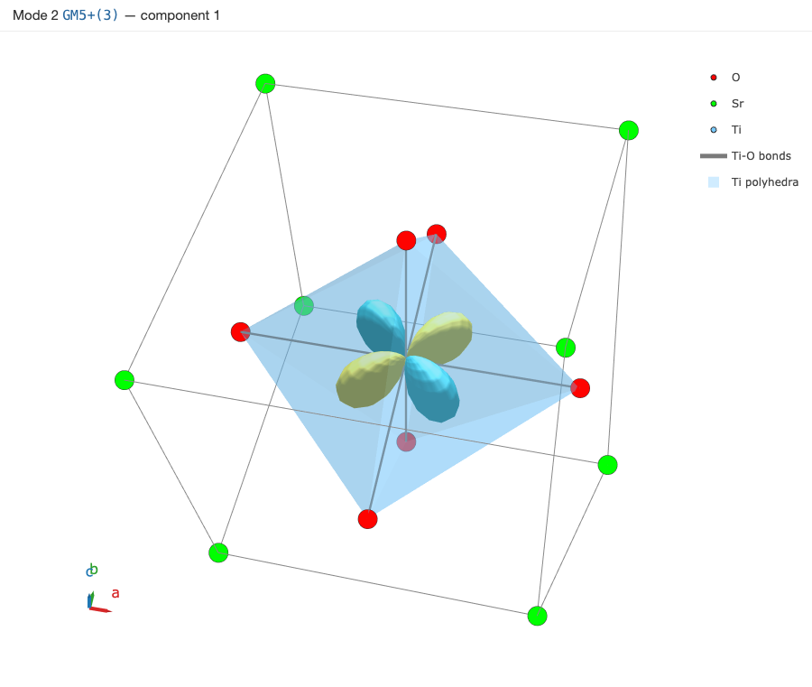 $t_{2g}$: one of GM5+ (threefold), $d_{xy}$ |
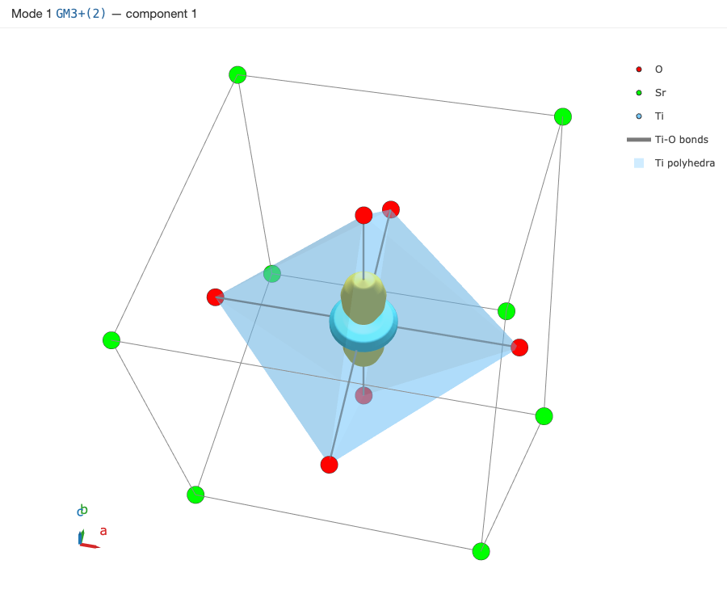 $e_g$: one of GM3+ (twofold), $d_{3z^2-r^2}$ |
|---|---|---|
| $X$ $(\tfrac12,0,0)$: two cells. In the right cell, yellow and cyan are interchanged relative to the left cell | 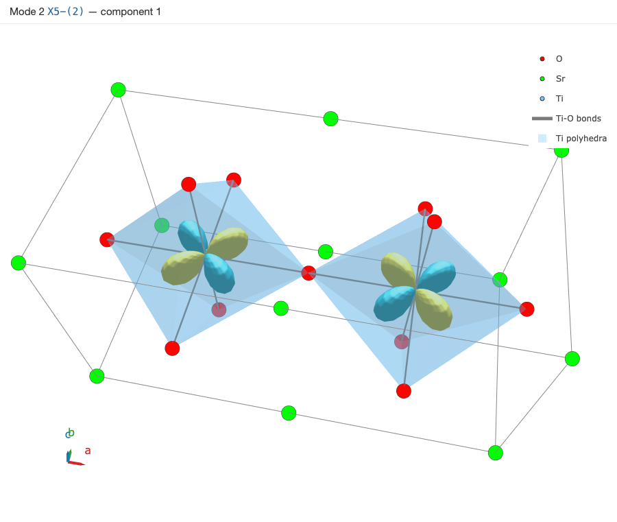 $t_{2g}$: X5− (twofold), $d_{xy}$ (paired with $d_{xz}$) |
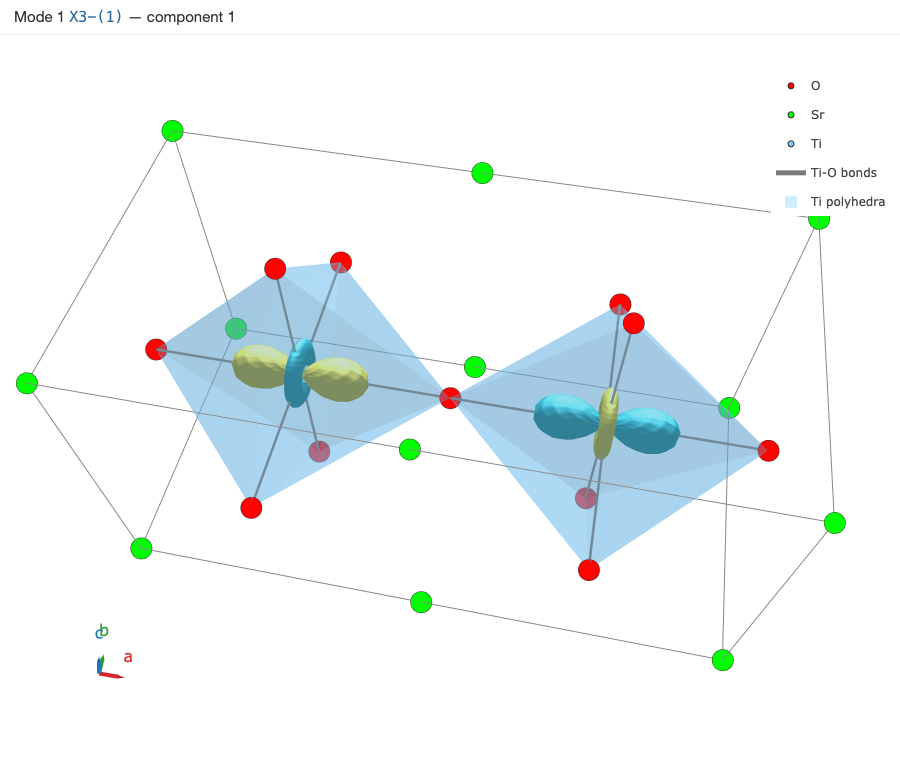 $e_g$: X3− (nondegenerate), $d_{3x^2-r^2}$ (the lobes extend in the $x$ direction of $\kk$) |
| $X$ (continued): states of the flat branches along $\Gamma$–$X$ | 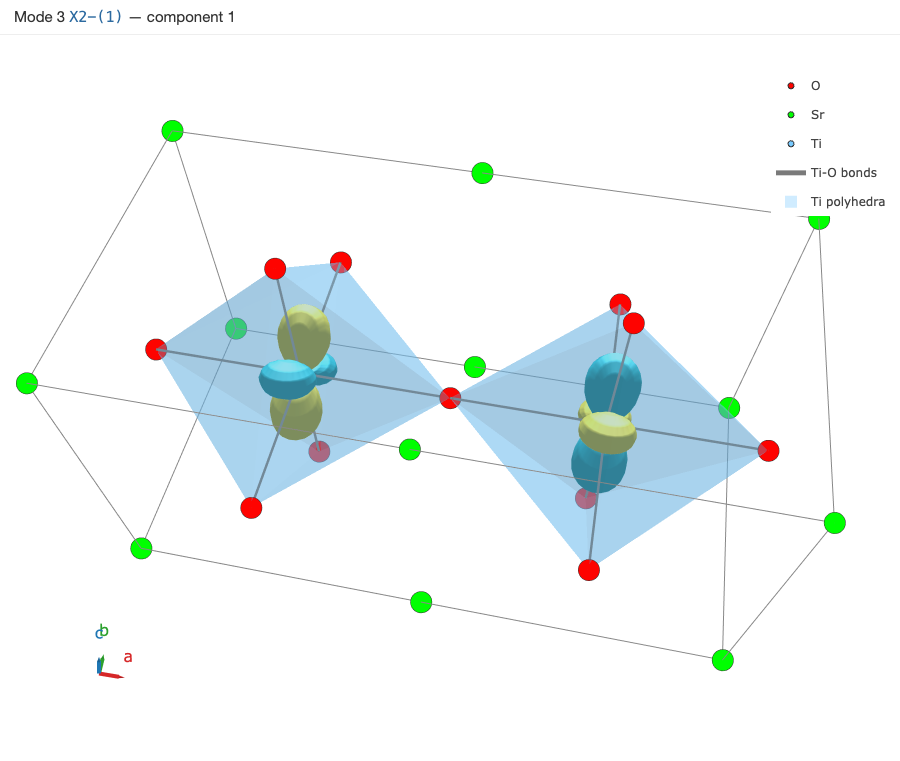 $t_{2g}$: X2− (nondegenerate), $d_{yz}$ (an almost flat branch) |
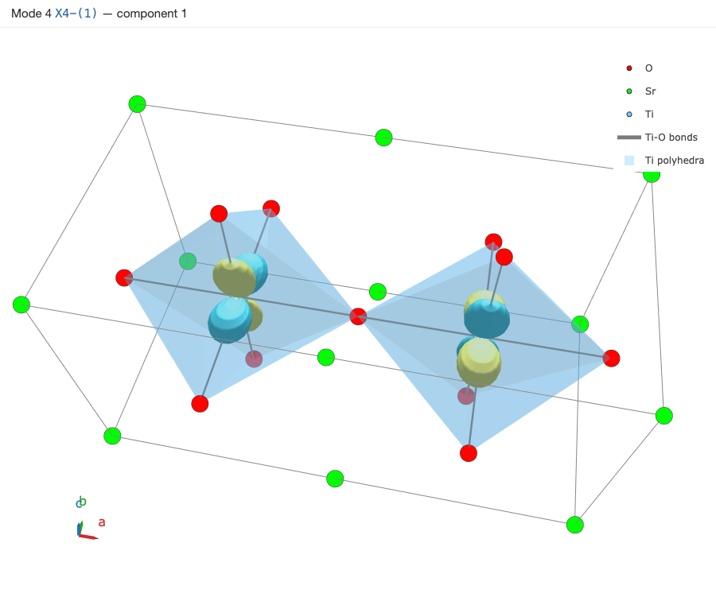 $e_g$: X4− (nondegenerate), $d_{z^2-y^2}$ (a flat branch) |
| $M$ $(\tfrac12,\tfrac12,0)$: four cells. In the $xy$ plane, the colors of adjacent cells are interchanged (checkerboard) | 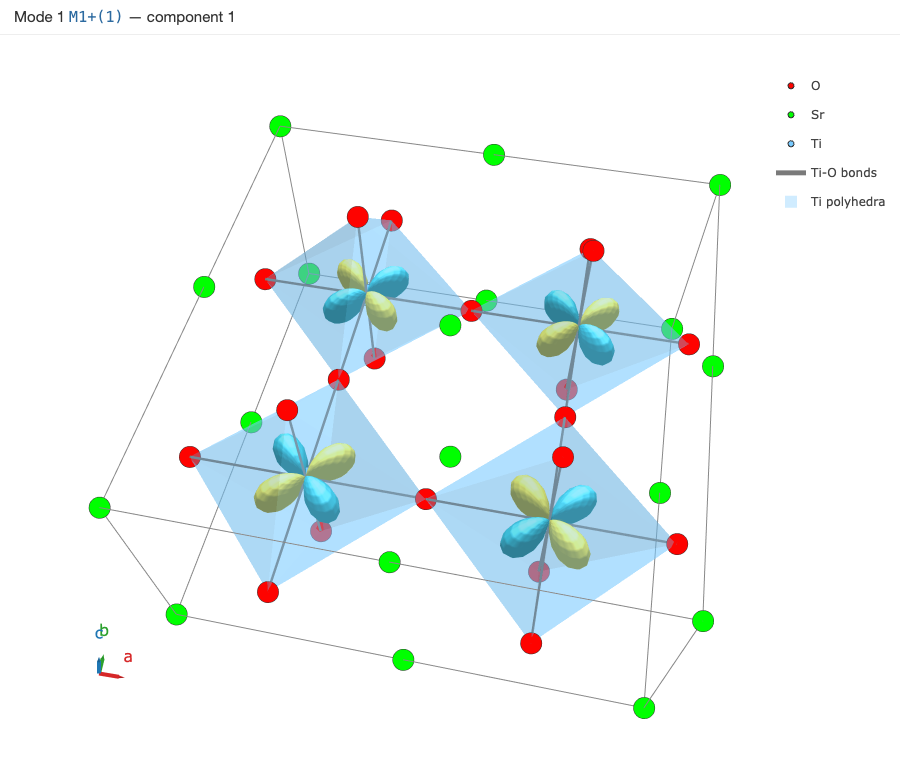 $t_{2g}$: M1+ (nondegenerate), $d_{xy}$ |
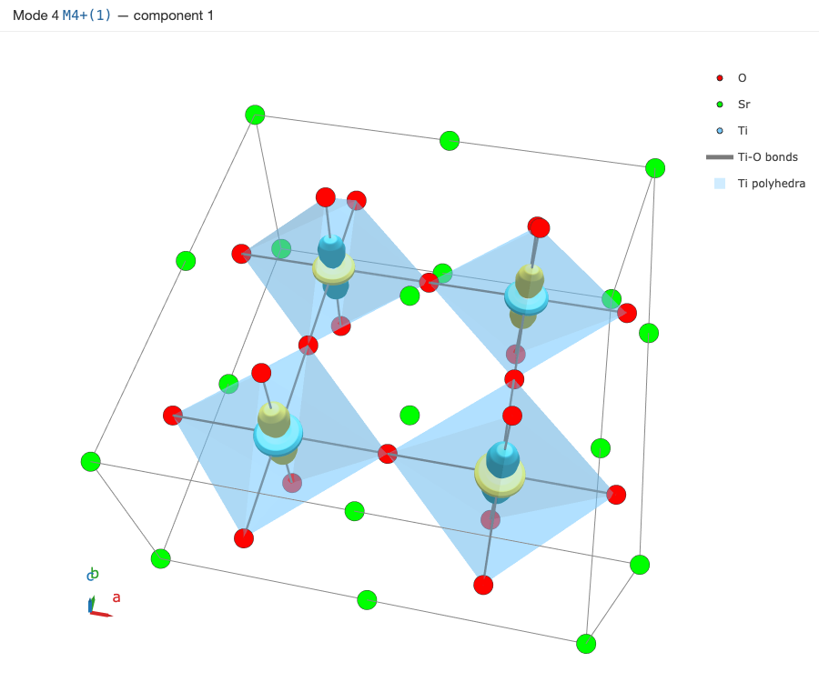 $e_g$: M4+ (nondegenerate), $d_{3z^2-r^2}$ |
| $R$ $(\tfrac12,\tfrac12,\tfrac12)$: eight cells. The sign reverses relative to the neighbor in all three directions (three-dimensional checkerboard) | 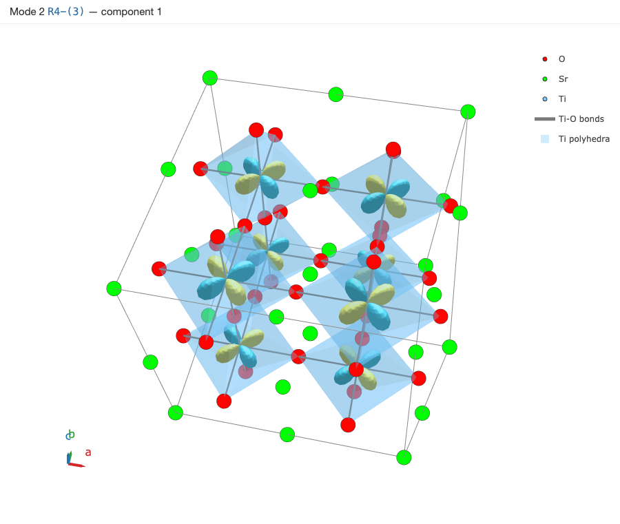 $t_{2g}$: one of R4− (threefold), $d_{xy}$ |
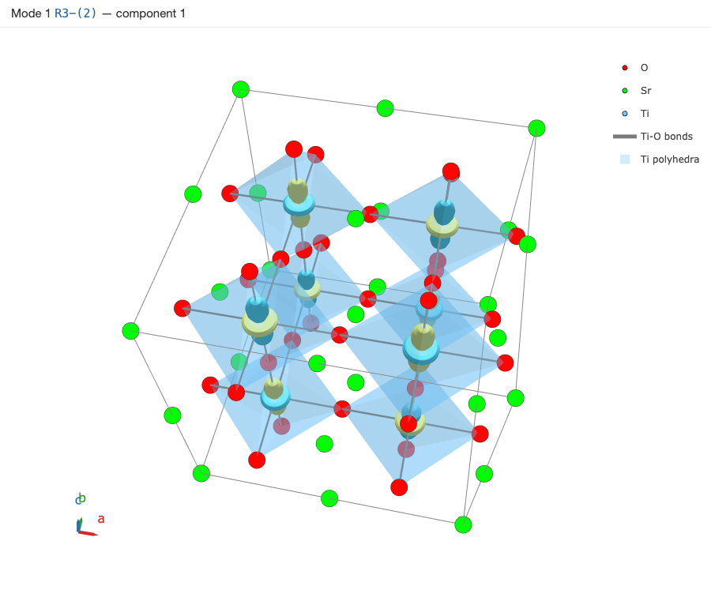 $e_g$: one of R3− (twofold), $d_{3z^2-r^2}$ |
What we want you to take away from Table C.5 is the following three points. (1) Within one screen, the same shape (“stamp”) is pressed into every cell, and only the sign from cell to cell differs (Bloch's theorem). (2) The number of cells and the directions of reversal are the same as in Figure C.4. (3) At $X$, the direction of $\kk$ (the $x$ axis) becomes a special axis, so $t_{2g}$ splits into $d_{yz}$ (nondegenerate) and $(d_{xy},d_{xz})$ (twofold degenerate). This leads to the “two branches plus one branch” of Figure C.9 (C.6.5). The screens for $M$ and $R$ have overlapping lobes, so it is best to rotate them and look.
C.6.3 Overlap of $\mathrm{Ti}\ d_{xy}$ and $\mathrm{O}\ p_y$: cancellation at $\Gamma$, reinforcement at $X$
We examine whether the $d_{xy}$ of $\mathrm{Ti}$ mixes with the $p_y$ orbital of the $\mathrm{O_x}$ lying in the $x$ direction (the $\pi$ type, perpendicular to the bond). We use the three steps of C.5.1 as they are (read the signs of the facing lobes → multiply by the Bloch phase → same sign or opposite sign). If the facing lobes have the same sign, the overlap of that pair is $+$ (bonding), and if they have opposite signs, it is $-$ (antibonding). Note, however, that what we judge here is not the bonding or antibonding with a neighboring orbital, but whether the sum of the overlaps of $\mathrm{Ti}$ $d$ and $\mathrm{O}$ $p$ is reinforced or cancelled. Figure C.8 shows the overlap in the $xy$ section ($z=\tfrac12$).
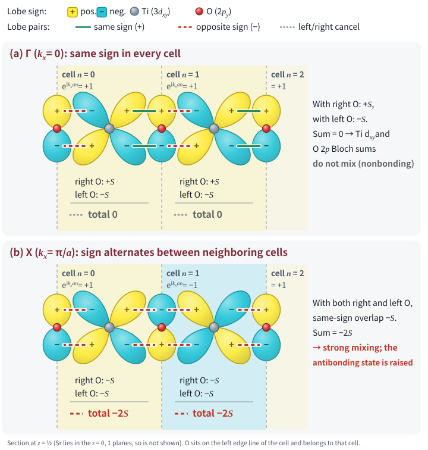
Let us read Figure C.8. The $+$ lobe of the $p_y$ of the $\mathrm{O}$ to the right of $\mathrm{Ti}$ faces the $+$ lobe in the first quadrant of $d_{xy}$, and the overlap is $+S$. The $+$ lobe of the $p_y$ of the $\mathrm{O}$ to the left faces the $-$ lobe in the second quadrant, and the overlap is $-S$. The signs on the right and on the left are opposite. This sign reversal is the core of this appendix. Next we confirm it with equations.
Derivation: Matrix element between the Bloch sums of $d_{xy}$ and the $p_y$ of $\mathrm{O_x}$
We define the hopping between the $d_{xy}$ of $\mathrm{Ti}$ (in the cell $\RR=\bm0$) and the $p_y$ of $\mathrm{O_x}$. The $\mathrm{O_x}$ to the left ($-x$ side) of $\mathrm{Ti}$, $(0,\tfrac12,\tfrac12)$, belongs to the same cell, and we let its matrix element be $t_-$. The $\mathrm{O_x}$ to the right ($+x$ side), $(1,\tfrac12,\tfrac12)$, belongs to the cell at $\RR=\aa_1$, and we let its matrix element be $t_+$.
Step 1: $t_-=-t_+$. The $\mathrm{O_x}$ atoms to the left and right of $\mathrm{Ti}$ are located at mirror-image positions with respect to a plane through $\mathrm{Ti}$ ($x\to-x$). Under this reflection, $p_y$ does not change its form, but $d_{xy}$ reverses its sign ($xy\to-xy$). Therefore the hopping to the right $\mathrm{O}$ is $-1$ times the hopping to the left $\mathrm{O}$: $t_+=-t_-$ ($+S$ and $-S$ in Figure C.8). (For readers of group theory, this is expressed as follows: since the reflection $\hat M$ commutes with $\Ham$ and $\hat M^2=1$, $\bra{\hat Mf}\Ham\ket{g}=\bra{f}\Ham\ket{\hat Mg}$ holds.)
Step 2: Form the Bloch sums. The matrix element between Bloch sums is given by $H_{dp}(\kk)=\sum_{\RR}\ee^{\ii\kk\cdot\RR}\bra{d,\bm0}\Ham\ket{p,\RR}$. The term for $\RR=\bm0$ is $t_-$ and that for $\RR=\aa_1$ is $t_+\ee^{\ii k_xa}$; the $\mathrm{O_x}$ atoms in other cells are far from $\mathrm{Ti}$ and are neglected. Using $t_-=-t_+$, we obtain
(The last equality follows from $\ee^{\ii\theta}-1=\ee^{\ii\theta/2}(\ee^{\ii\theta/2}-\ee^{-\ii\theta/2})=2\ii\,\ee^{\ii\theta/2}\sin(\theta/2)$.) The magnitude is $\abs{H_{dp}}=2\abs{t_+}\abs{\sin(k_xa/2)}$. At $\Gamma$ ($k_x=0$), the matrix element is 0. At $X$ ($k_x=\pi/a$), it takes the maximum value $2\abs{t_+}$.
Step 3: Correspondence with Figure C.8. The hopping integral $t$ is roughly proportional to the overlap $S$ of the facing lobes, with a negative proportionality coefficient ($t\approx-KS$, $K>0$; this is the same as the same-sign neighboring $s$ orbitals having $t<0$ in C.4). All that matters is that if the sign of $S$ is opposite for the left and right $\mathrm{O}$, the sign of $t$ is also opposite. Eq. \eqref{eq:C-hdp} is proportional to $S(\ee^{\ii k_xa}-1)$, which agrees with the total in Figure C.8 ($S-S=0$ at $\Gamma$, $-S-S=-2S$ at $X$). In Slater–Koster notation, $t_+$ is $\pm V_{pd\pi}$ (the sign depends on the convention), and the magnitude $2\abs{V_{pd\pi}}\abs{\sin(k_xa/2)}$ is unchanged.
The other $d$–$p$ pairs take the same form. The hopping to the $\mathrm{O_j}$ lying in the $j$ direction from $\mathrm{Ti}$ has opposite signs on the left and right of $\mathrm{Ti}$ (the $\pm j$ sides), so it carries the factor $(\ee^{\ii k_ja}-1)$. Therefore, at $\Gamma$ ($\kk=0$) all the matrix elements between $\mathrm{Ti}\ 3d$ and $\mathrm{O}\ 2p$ vanish, and a pure $\mathrm{Ti}\ 3d$ state with zero $\mathrm{O}\ 2p$ component remains. This is the starting point of the reason why the bottom of the conduction band lies at $\Gamma$. In the PBE calculation as well, the $\mathrm{O}\ 2p$ weight of the $t_{2g}$ at $\Gamma$ ($1.340$ eV) is 0.000.
(Optional) In the language of group theory: why no mixing is possible at $\Gamma$ comes down to the parity under inversion
Under the inversion centered at $\mathrm{Ti}$, $\mathrm{Ti}\ 3d$ is even ($g$). For the Bloch sum of the $p_y$ orbitals of $\mathrm{O_x}$, inversion carries the $\mathrm{O_x}$ of cell $\RR$ to the $\mathrm{O_x}$ of cell $\aa_1-\RR$ and sends $p_y\to-p_y$, so at a point with $\kk\equiv-\kk$ it has the eigenvalue $-\ee^{\ii k_xa}$. At $\Gamma$ this is $-1$ (odd), and it cannot mix with the even $d$ orbital (the same argument as the selection rule in Chapter 10, Section 10.4). At $X$ it is $+1$ (even), and mixing is allowed. That the phase factor of $\kk$ swaps the parity under inversion is how the factor $(\ee^{\ii k_xa}-1)$ in Eq. \eqref{eq:C-hdp} reads in group-theoretical terms.
C.6.4 The formula for the $d_{xy}$-like band
Examining the parity under reflection, we find that $d_{xy}$ couples only to two Bloch sums, the $p_y$ of $\mathrm{O_x}$ and the $p_x$ of $\mathrm{O_y}$ (its matrix elements with every $p$ of $\mathrm{O_z}$ and with the $p_x$ and $p_z$ of $\mathrm{O_x}$ are zero). The problem therefore reduces to a two-level problem, and if we neglect hopping between $\mathrm{O}$ atoms, the energy can be written in the following closed form. The derivation is in the box below (optional).
Here $\Delta=\epsilon_{t2g}-\epsilon_p>0$ and $t_\pi=\abs{t_+}$. The $+$ branch ($E^+$) is the $d$-like antibonding state (conduction band), and the $-$ branch is the $\mathrm{O}\ 2p$-like bonding state. At $\Gamma$ all the $\sin^2$ terms vanish, so $E^+=\epsilon_{t2g}$ (no mixing; the level stays at its original value). As $\kk$ moves away from $\Gamma$, the $\sin^2$ terms become positive and grow, and $E^+$ is pushed upward. No $k_z$ appears in the formula: by symmetry, $d_{xy}$ cannot couple to any $p$ orbital of $\mathrm{O_z}$, so there is no path for hopping in the $z$ direction. The $d_{yz}$-like and $d_{zx}$-like bands follow by permuting the indices cyclically.
Derivation: Eq. \eqref{eq:C-dxyband} (optional; the conclusion is Eq. \eqref{eq:C-dxyband} alone)
Let the energy of the Bloch sum $\ket{d}$ of $d_{xy}$ be $\epsilon_{t2g}$ (the level before mixing with $\mathrm{O}\ 2p$), and let the energy of the Bloch sums $\ket{\chi_x}$ and $\ket{\chi_y}$ of the $p_y$ of $\mathrm{O_x}$ and the $p_x$ of $\mathrm{O_y}$ be $\epsilon_p$ (the matrix element between $\chi_x$ and $\chi_y$ is zero, since we neglect hopping between $\mathrm{O}$ atoms). Here $h_x=\bra{\chi_x}\Ham\ket{d}$ and $h_y=\bra{\chi_y}\Ham\ket{d}$ are the complex conjugates of $H_{dp}$ in C.6.3, with $\abs{h_x}=\abs{t_+}\abs{\ee^{\ii k_xa}-1}$ and so on. We then construct $\ket{b}=(h_x\ket{\chi_x}+h_y\ket{\chi_y})/W$ and $\ket{n}=(-h_y^*\ket{\chi_x}+h_x^*\ket{\chi_y})/W$, with $W=\sqrt{\abs{h_x}^2+\abs{h_y}^2}$. These are orthogonal, and $\bra{b}\Ham\ket{d}=(h_x^*h_x+h_y^*h_y)/W=W$, $\bra{n}\Ham\ket{d}=(-h_yh_x+h_xh_y)/W=0$. That is, $d_{xy}$ couples only to $\ket{b}$, and $\ket{n}$ remains at $\epsilon_p$. The secular equation for $\ket{d}$ and $\ket{b}$ is
$$ (\epsilon_{t2g}-E)(\epsilon_p-E)-W^2=0\ \Longrightarrow\ E^{\pm}=\frac{\epsilon_{t2g}+\epsilon_p}{2}\pm\sqrt{\Bigl(\frac{\epsilon_{t2g}-\epsilon_p}{2}\Bigr)^2+W^2} $$and from $\abs{\ee^{\ii\theta}-1}^2=4\sin^2(\theta/2)$ we obtain $W^2=4t_\pi^2\bigl[\sin^2\frac{k_xa}{2}+\sin^2\frac{k_ya}{2}\bigr]$. This is Eq. \eqref{eq:C-dxyband}. For $\abs{\kk}a\ll1$ we can expand $\sqrt{(\Delta/2)^2+W^2}\approx\frac\Delta2+\frac{W^2}{\Delta}$, which gives $E^+_{xy}\simeq\epsilon_{t2g}+\frac{t_\pi^2a^2}{\Delta}(k_x^2+k_y^2)$ (the same form as the result of second-order perturbation theory for large $\Delta$; an approximation usable only for small $\kk$).
Since this expanded formula has the form $E=\hbar^2k^2/2m^*$, we can read off the effective mass $m^*$ in the $x$ direction: $\hbar^2/2m^*=t_\pi^2a^2/\Delta$. With the illustrative values of the next example, $m^*\simeq0.41\,m_e$ (and $0.37\,m_e$ in a numerical diagonalization that also includes hopping between $\mathrm{O}$ atoms), which agrees well with the fit to PBE near $\Gamma$ ($0.35\,m_e$). These are values of this model and this calculation, not measured values.
Example C.4: Values at the $X$ point (using the illustrative values)
Take $\epsilon_{t2g}=1.52$, $\epsilon_p=-1.52$, and $t_\pi=1.34$ eV. Calculate $E^+_{xy}$ of Eq. \eqref{eq:C-dxyband} at $\Gamma$ and $X$, and compare with the PBE values. (These are not literature values but illustrative values obtained by fitting a tight-binding model to the PBE bands by least squares; the zero of energy is the PBE VBM. That $t_\pi=1.34$ eV is the same number as the PBE $t_{2g}$ value of $1.340$ eV at $\Gamma$ is a coincidence.)
Solution: $\Delta=3.04$ eV, $(\epsilon_{t2g}+\epsilon_p)/2=0$, and $\Delta/2=1.52$ eV. At $\Gamma$, $E^+=1.52$ eV. At $X$ $(\tfrac12,0,0)$, $\sin^2(\pi/2)=1$ and $\sin^20=0$, so
$$ E^+_{xy}(X)=\sqrt{1.52^2+4\times1.34^2\times1}=\sqrt{2.3104+7.1824}=\sqrt{9.4928}=3.081\ \mathrm{eV} $$The upward push from $\Gamma$ to $X$ is $3.081-1.520=1.561$ eV. In PBE, the twofold level of $d_{xy}$-like and $d_{xz}$-like states at $X$ lies at $3.214$ eV, and the push is $3.214-1.340=1.874$ eV. The model reproduces the PBE trend qualitatively (hopping between $\mathrm{O}$ atoms and mixing with other orbitals account for the remaining difference).
Note also that at the PBE $\Gamma$ point, $e_g$ ($3.598$ eV) lies $2.258$ eV above $t_{2g}$ ($1.340$ eV). Since $\mathrm{Ti}\ 3d$ and $\mathrm{O}\ 2p$ cannot mix at $\Gamma$, this difference is the input itself of the $\mathrm{Ti}\ 3d$–$\mathrm{O}\ 2p$ model and cannot be predicted (all that symmetry can tell us is that the Bloch sum of $\mathrm{O}\ 2s$ can mix with $e_g$ but not with $t_{2g}$).
C.6.5 Along $\Gamma$–$X$, $t_{2g}$ splits into “two plus one”
At $\Gamma$ all the $\mathrm{Ti}$–$\mathrm{O}$ paths are cut, so $t_{2g}$ forms the bottom of the $d$-like bands. When we move to $\kk=(k_x,0,0)$ ($\Gamma$–$X$, the $\Delta$ line), Eq. \eqref{eq:C-dxyband} and its cyclic permutations give the following.
- $d_{xy}$-like and $d_{zx}$-like: in both, $\sin^2(k_xa/2)$ takes effect and they disperse; since the formulas are the same, they remain degenerate (a twofold representation of $C_{4v}$, the symmetry of the $\Delta$ line).
- $d_{yz}$-like: $\sin^2(k_ya/2)+\sin^2(k_za/2)=0$, so in the nearest-neighbor $\mathrm{Ti}$–$\mathrm{O}$ model (even when hopping between $\mathrm{O}$ atoms is included) it is completely flat over the whole of $\Gamma$–$X$. This is because its overlap with the $p$ orbitals of $\mathrm{O}$ in the $x$ direction is zero by symmetry.
That is, the threefold $t_{2g}$ at $\Gamma$ splits, along $\Gamma$–$X$, into a dispersive twofold branch ($d_{xy}$, $d_{zx}$) and a single branch that hardly disperses ($d_{yz}$). The name $d_{yz}$ refers to the case $\kk\parallel x$; for $\kk\parallel y$, it is $d_{zx}$ that is flat. The two entries in the column to the left of $X$ in Table C.5 (X5− and X2−) are these two kinds of states. Figure C.9 shows the three PBE $t_{2g}$ bands.

Table C.6 summarizes the PBE values at $\Gamma$, $X$, $M$, and $R$.
| Point | Highest $\mathrm{O}\ 2p$ level | $\mathrm{Ti}\ 3d$ $t_{2g}$-like levels (in increasing order) |
|---|---|---|
| $\Gamma$ | $-0.292$ (threefold) | $+1.340$ (threefold, $\mathrm{Ti}\ 3d$ 0.906, $\mathrm{O}\ 2p$ 0.000) |
| $X$ $(\tfrac12,0,0)$ * | $-0.661$ (twofold) | $+1.495$ (nondegenerate, $d_{yz}$ type, $\mathrm{O}\ 2p$ 0.000), $+3.214$ (twofold, $d_{xy}$, $d_{xz}$ type, $\mathrm{O}\ 2p$ 0.222) |
| $M$ $(\tfrac12,\tfrac12,0)$ | $-0.105$ (nondegenerate) | $+3.212$ (twofold, $d_{yz}$, $d_{xz}$ type), $+3.626$ (nondegenerate, $d_{xy}$ type) |
| $R$ $(\tfrac12,\tfrac12,\tfrac12)$ | $0.000$ (threefold, $\mathrm{O}\ 2p$ 1.000) | $+3.819$ (threefold, $\mathrm{Ti}\ 3d$ 0.835, $\mathrm{O}\ 2p$ 0.156) |
* The row for $X$ is for the case $\kk\parallel x$ ($X_1=(\tfrac12,0,0)$ in the SALC viewer). The $X$ of the DFT level viewer of CrystOD is $(0,\tfrac12,0)$, where the flat branch is $d_{xz}$ and the twofold branch is $d_{xy}$, $d_{yz}$.
How to read Table C.6: the $t_{2g}$ at $\Gamma$ is a non-mixing state with $\mathrm{O}\ 2p$ weight 0. At $X$ it splits into a dispersive twofold level ($\mathrm{O}\ 2p$ weight 0.222) and a single level that hardly moves (weight 0). At $M$, $d_{xy}$ couples to the $\mathrm{O}$ atoms in the two directions $x$ and $y$ and rises the most, while $d_{yz}$ and $d_{xz}$ couple in only one direction and so lie at $3.21$ eV, the same as at $X$. At $R$, all three couple in two directions and are degenerate.
The answer to “Why is the minimum at $\Gamma$?” At $\Gamma$, the contributions of the $\mathrm{O}$ atoms on the left and right cancel and do not mix with $\mathrm{O}\ 2p$, so it forms the bottom of the $d$-like bands. Away from $\Gamma$, the phase in the neighboring cell shifts and the cancellation becomes incomplete, so at least two bands are pushed upward. In a model with only nearest-neighbor $\mathrm{Ti}$–$\mathrm{O}$ coupling (even when hopping between $\mathrm{O}$ atoms is included), the $d_{yz}$-like branch is completely flat in the $k_x$ direction, and the bottom would be at the same height along the whole $\Gamma$–$X$ line. The reason the bottom lies only at $\Gamma$ in PBE is that this branch disperses slightly ($0.155$ eV) and rises toward $X$; the cause lies in more distant interactions, such as the direct $d$–$d$ overlap between $\mathrm{Ti}$ atoms (we do not go into this in this appendix).
“Heavy electrons” and “light electrons” are specified direction by direction. In this model the $d_{xy}$-like branch does not disperse in the $k_z$ direction (the effective mass is infinite) but is light in the $x$ and $y$ directions, whereas the $d_{yz}$-like branch is heavy in the $x$ direction ($6.6\,m_e$ in the fit to PBE near $\Gamma$, versus $0.35\,m_e$ for the dispersive twofold branch). These are values of this calculation.
C.6.6 The top of the valence band is the nonbonding $\mathrm{O}\ 2p$ at $R$
At $R=(\tfrac12,\tfrac12,\tfrac12)$ the phase factor is $-1$ in all three directions, and the factor $(\ee^{\ii k_ja}-1)=-2$ in the $\mathrm{Ti}$–$\mathrm{O}$ matrix element is at its maximum. In contrast to $\Gamma$, this is the point where the coupling between $\mathrm{O}\ 2p$ and $\mathrm{Ti}\ 3d$ is strongest. Even so, some $\mathrm{O}\ 2p$ states that do not mix with $\mathrm{Ti}$ at all remain at $R$. Let us confirm this by counting.
Derivation: The number of $\mathrm{O}\ 2p$ states at $R$ that cannot couple to $\mathrm{Ti}\ 3d$
At $R$ there are nine Bloch sums of $\mathrm{O}\ 2p$ and five Bloch sums of $\mathrm{Ti}\ 3d$. The $d$–$p$ block of $\Ham$ is a $5\times9$ matrix, and its rank is at most 5. Therefore, among the linear combinations of the nine $\mathrm{O}\ 2p$ orbitals, there are at least $9-5=4$ that couple to none of the $\mathrm{Ti}\ 3d$ orbitals. Concretely, $d_{xy}$ couples to the sum of the $p_y$ of $\mathrm{O_x}$ and the $p_x$ of $\mathrm{O_y}$ (in C.6.4; at $R$, $h_x=h_y=-2t_+$), $d_{yz}$ and $d_{zx}$ are similar, and $e_g$ couples to the $\sigma$-type combinations. The five $d$ orbitals couple to five combinations of $\mathrm{O}\ 2p$, and the remaining four do not couple.
By symmetry, these four fall into two groups (Table C.7).
| Shape | Partner it can couple to | PBE (eV) |
|---|---|---|
| $\sigma$-type “breathing” $(\mathrm{O_x}p_x+\mathrm{O_y}p_y+\mathrm{O_z}p_z)/\sqrt3$ (R2−, nondegenerate) | $\mathrm{Ti}\ 4s$ (does not couple to $3d$) | $-4.62$ |
| $\sigma$-type $(2\mathrm{O_y}p_y-\mathrm{O_z}p_z-\mathrm{O_x}p_x)/\sqrt6$ and so on (R3−, twofold) | $\mathrm{Ti}\ e_g$ | $-4.21$ |
| $\pi$-type, sum $(\mathrm{O_y}p_x+\mathrm{O_x}p_y)/\sqrt2$ and so on (R4−, threefold) | $\mathrm{Ti}\ t_{2g}$ (and $\mathrm{Sr}\ p$) | $-3.78$ |
| $\pi$-type, difference $(\mathrm{O_y}p_x-\mathrm{O_x}p_y)/\sqrt2$ and so on (R5−, threefold) | Couples to no $s$, $p$, or $d$ orbital of any atom | $0.000$ (VBM) |
R2− does not couple to $\mathrm{Ti}\ 3d$, but it can couple to $\mathrm{Ti}\ 4s$ (in PBE the $\mathrm{Ti}\ s$ weight is 0.222). Therefore the $\mathrm{O}\ 2p$ states that do not couple to $\mathrm{Ti}\ 3d$ number four (R2− and R5−), and of these, the perfectly nonbonding ones, which mix with no $\mathrm{Ti}$ orbital at all, are the three of $\pi$ type (R5−). This threefold degenerate state is the top of the valence band (VBM), and in PBE its $\mathrm{O}\ 2p$ weight is $1.000$ (that of $\mathrm{Ti}$ and $\mathrm{Sr}$ is 0).
Let us look at the shape of this state in Figure C.10(b). Component 1 is $(\mathrm{O_y}p_x-\mathrm{O_x}p_y)/\sqrt2$: the four $\mathrm{O}$ atoms in the $xy$ plane surrounding $\mathrm{Ti}$ have their $p$ orbitals perpendicular to the bond axis ($\pi$ type) lined up in a pattern that goes around $\mathrm{Ti}$ in the sense of rotation (the overall sign is arbitrary, so the opposite sense is equally fine). In the neighboring octahedron (Bloch phase $-1$) the sense is reversed, and it alternates in all three directions. Since $d_{xy}$ couples to the sum of $\mathrm{O_x}p_y$ and $\mathrm{O_y}p_x$, it cancels against the shape of this difference and does not couple to it.
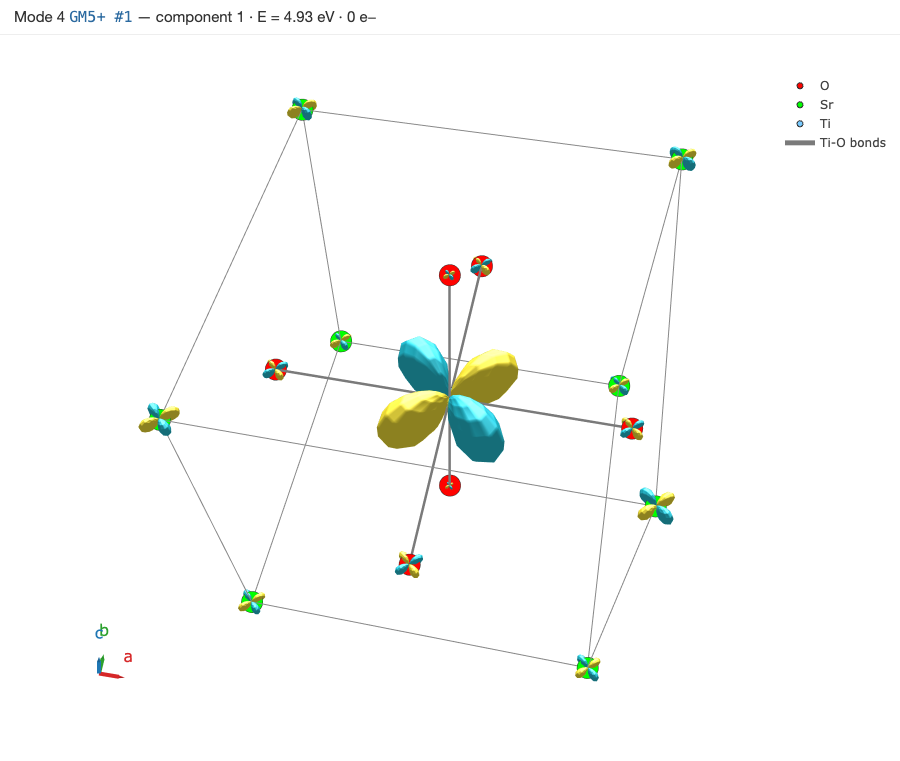
(a) Bottom of the conduction band at $\Gamma$ (actual DFT wave function)

(b) Top of the valence band at $R$ (schematic)
From the above, the top of the valence band at $R$ is a state in which two conditions are satisfied. (i) It is the combination in which neighboring $\mathrm{O}$ atoms (distance $a/\sqrt2$) are all arranged antibonding (eight matrix elements, or four bonds per cell; the lobes arranged in a ring change sign between neighboring $\mathrm{O}$ atoms), so it can be the highest within $\mathrm{O}\ 2p$. Looking at $\mathrm{O}$–$\mathrm{O}$ alone, the energy is $\epsilon_p+2(V_{pp\sigma}-V_{pp\pi})=\epsilon_p+1.32$ eV (tight-binding illustrative values $V_{pp\sigma}=0.57$, $V_{pp\pi}=-0.09$ eV; each of the eight matrix elements contributes $+0.165$ eV). (ii) Moreover, it cannot mix with any orbital of $\mathrm{Ti}$ (coefficient 0), so it is not pushed down by $\mathrm{Ti}$. Another set that would be at the same height if we looked at $\mathrm{O}$–$\mathrm{O}$ alone (the $e_g$-type $R_3^-$ with the $\mathrm{Sr}$ origin) mixes with the $\mathrm{Ti}$ $e_g$ and is pushed down, so it does not remain at the top. What remains is the $\pi$-like threefold degeneracy ($R_5^-$ in CrystOD with the $\mathrm{Sr}$ origin).
Supplement: The difference between $R$ and $M$
In the nearest-neighbor-only model there is also a state at the same height at $M$ (the top is flat along the $M$–$R$ line), and the fact that $R$ is higher than $M$ by about $0.1$ eV ($0.105$ eV in PBE) is an effect of more distant interactions. This appendix does not examine the breakdown of that difference.
Rotating the top at $R$ in CrystOD
The actual PBE wave function, the same as in Figure C.10(a), can be rotated and viewed in the CrystOD level viewer: $R$ (the top becomes a 3D figure in which many $\mathrm{O}\ 2p$ lobes are lined up), $\Gamma$, $X$, $M$ ($X$ in this viewer is $(0,\tfrac12,0)$). The command that redoes the PBE SCF and generates these is crystod --visualize --pyscf -c 221_PPOSCAR_SrTiO3 --chk SrTiO3_new.chk --ke-cutoff 80 --kmesh 2 2 2 --max-l 2 --xc pbe --oxidation O=-2 Sr=+2 Ti=+4 --bond Ti O 2.5 --real-coefficient (CrystOD 0.4.5, about one minute; --diagonalize --valence-only --window -1.5 12 were added).
C.6.7 The gap of $\mathrm{SrTiO_3}$ lies between “nonbonding” and “nonbonding”
Physical Meaning: What the indirect gap really is
The band gap of $\mathrm{SrTiO_3}$ is formed between the following two nonbonding states. The bottom of the conduction band is the $\mathrm{Ti}\ t_{2g}$ state at $\Gamma$ ($\mathrm{O}\ 2p$ component 0, same sign in all cells), and the top of the valence band is the $\mathrm{O}\ 2p$ state at $R$ ($\mathrm{Ti}$ component 0, a threefold-degenerate $\pi$-type state arranged in the sense of rotation).
The $d$–$p$ hybridization pushes bonding states down and antibonding states up. At $\Gamma$ all the $d$–$p$ matrix elements are 0, so neither the $\mathrm{Ti}\ t_{2g}$ state at $\Gamma$ (the bottom of the conduction band) nor the $\mathrm{O}\ 2p$ states undergo a hybridization shift. The top of the valence band ($R$) is the state in which the $\mathrm{O}\ 2p$ orbitals, which have no bonding partner in either $\mathrm{Ti}$ or $\mathrm{Sr}$ and so are not pushed down by $d$, are arranged most antibonding between neighboring $\mathrm{O}$ atoms. Since these two states lie at different points, $\Gamma$ and $R$, the gap is an indirect gap ($R\to\Gamma$).
The indirect gap in PBE (this calculation) is $1.340$ eV and the direct gap ($\Gamma$–$\Gamma$) is $1.632$ eV, which are about $41\,\%$ and $44\,\%$ of the experimental values (indirect $3.25$ eV, direct $3.75$ eV; K. van Benthem, C. Elsässer, R. H. French, J. Appl. Phys. 90, 6156 (2001)). These are values of this calculation, with a small basis set (DZVP) and a coarse $\kk$ mesh, and the PBE values change with the calculation conditions. In any case, it is common to all of them that they are far smaller than the experimental values.
C.7 Bloch States of Phonons — The Phase of Atomic Displacements
What this section shows: The states of lattice vibrations (phonons) can be written in exactly the same language as the Bloch states of electrons. The “stamp within the cell” is the pattern of atomic displacements (the eigenvector), and the “phase per cell” is $\ee^{\ii\qq\cdot\RR}$. In $\mathrm{SrTiO_3}$, at $\Gamma$ all cells move in the same way; at $X$, $M$, and $R$ neighboring cells move in opposite directions, and the lowest modes at $M$ and $R$ are rotations of the oxygen octahedra.
C.7.1 Correspondence between electrons and phonons
In Chapter 13, §13.6, we wrote the phonons of a diatomic chain in the form of a plane wave $\ee^{\ii(kna-\omega t)}$. In a three-dimensional crystal, the displacement of atom $\kappa$ in cell $\RR$ (the $\kappa$th atom within the cell) can be written in the following form.
Here $A$ is the amplitude and $M_\kappa$ is the mass of atom $\kappa$. $\bm e_\kappa(\qq)$ is the eigenvector of the mass-weighted dynamical matrix, and $\bm e_\kappa/\sqrt{M_\kappa}$ gives the direction and relative magnitude of the displacement of the $\kappa$th atom within the cell (the stamp within the cell). The stamp differs for each $\kappa$ and is determined by $\qq$ and the mode $n$, but within a single mode it does not depend on the cell $\RR$. In other words, the state is the pattern within the cell (the displacement $\bm e_\kappa/\sqrt{M_\kappa}$) $\times$ the phase per cell ($\ee^{\ii\qq\cdot\RR}$). This has the same structure as the Bloch sum of electrons (Eq. \eqref{eq:C-blochsum}). Table C.8 summarizes the correspondence.
| Electrons (Bloch states) | Phonons | |
|---|---|---|
| Phase per cell (clock hand) | $\ee^{\ii\kk\cdot\RR}$ | $\ee^{\ii\qq\cdot\RR}$ ($\qq$ is the wave vector) |
| Stamp within the cell | Coefficients of the orbital shapes ($s$, $p$, $d$, …) | Displacement $\bm e_\kappa/\sqrt{M_\kappa}$ (direction and magnitude of the displacement of atom $\kappa$) |
| Number of states at one point | One per band (with degeneracy) | $3\times5=15$ modes (5 atoms $\times$ 3 directions) |
| Points that can be chosen real | $\Gamma$, $X$, $M$, $R$ (standing waves) | $\Gamma$, $X$, $M$, $R$ (standing waves) |
| Relation between neighbors | Bonding / antibonding | Neighboring atoms move in the same / opposite direction |
| Vertical axis | Energy $E_n(\kk)$ | Frequency $\omega_n(\qq)$ |
Of the 15 modes at $\Gamma$, three are acoustic modes (uniform translation) and the remaining 12 are optical modes (for the classification by the irreducible representations of the cubic symmetry, see Chapter 13).
Computational conditions of this section and how to read the numbers
The phonon numbers in this section are results in the harmonic approximation at 0 K, calculated with phonopy using a machine-learning interatomic potential (MLIP; the MACE model MACE-matpes-r2scan-omat-ft, fine-tuned on r2SCAN data; I. Batatia et al., Advances in Neural Information Processing Systems 35 (2022)) through macer of the Mochizuki Research Group. The calculation uses a $2\times2\times2$ supercell (40 atoms), a displacement of $0.01$ Å, and no nonanalytic term (LO–TO splitting). The lattice constant is $a=3.8995$ Å, relaxed in this calculation ($0.14\,\%$ smaller than the experimental room-temperature value of $3.905$ Å). The $2\times2\times2$ supercell is exactly commensurate with $\Gamma$, $X$, $M$, and $R$, so the frequencies at these four points contain no interpolation (they come directly from the force constants of the supercell). The lines between these points in Figure C.11 are interpolated. This MLIP is neither DFT nor experiment, so read the numbers as “in this calculation.”
C.7.2 $\Gamma$: all cells move in the same way
At $\Gamma$ we have $\qq=0$, and the phase factor is 1 in every cell. Of the 15 modes, three are acoustic modes, in which all atoms move in the same direction by the same amount (uniform translation of the whole crystal, frequency 0). The rest are optical modes, in which the atoms within the cell move relative to one another. The optical mode with the lowest frequency is the polar mode ($T_{1u}$, threefold degenerate, $2.66$ THz $=88.9\ \mathrm{cm^{-1}}$). For the $z$-polarized component, the displacements within the cell (normalized so that the largest atomic displacement is 1) are as follows.
- $\mathrm{Sr}$: $+0.27$, $\mathrm{Ti}$: $+0.49$.
- $\mathrm{O}$: $-0.94$ (the $\mathrm{O}$ whose $\mathrm{Ti}$–$\mathrm{O}$ bond lies along $z$), $-1.00$ (the other two $\mathrm{O}$ atoms).
That is, the cations ($\mathrm{Sr}$, $\mathrm{Ti}$) move in the same direction and the six oxygen atoms move in the opposite direction. This pattern (the stamp) is repeated in the same direction in all cells (Figure C.12(c)). Because the positive and negative ions move oppositely, an electric dipole arises in each cell, and the mode is infrared-active (Chapters 10 and 13). The pattern is mainly $\mathrm{Ti}$ versus $\mathrm{O_6}$ (Slater type), with a small admixture of $\mathrm{Sr}$ versus $\mathrm{TiO_3}$ (Last type) (Last : Slater : Axe $=0.27:0.74:0.04$; the three are not orthogonal, so the coefficients are a rough estimate). Since $T_{1u}$ appears four times among the 15 modes, this mixing is not determined by symmetry but by the force constants (of this MLIP).
This polar mode corresponds to the “soft mode” of Chapter 19, §19.6. In experimental $\mathrm{SrTiO_3}$, this mode softens considerably as the temperature is lowered, but because of zero-point vibration it does not freeze, and the material does not become ferroelectric even at absolute zero (a quantum paraelectric; Chapter 19, Example 19.8). In contrast, in the 0 K harmonic-approximation calculation of this appendix, the frequency is positive ($2.66$ THz), and the cubic structure is not unstable toward ferroelectricity. The calculated frequency shifts by about $0.01$ THz depending on how the force constants are constructed, so do not place too much trust in the fine values.
C.7.3 $X$, $M$, $R$: neighboring cells move oppositely, and the unit cell doubles
At $X$, $M$, and $R$ the phase factor is $\pm1$, and there are directions along which the displacement is reversed in the neighboring cell. The phase pattern is the same as in Figure C.4: it is reversed alternately along the $x$ direction at $X$, within the $xy$ plane at $M$, and along all three directions at $R$. Therefore, if this pattern is frozen (that is, the atoms actually stop at the displaced positions), the unit cell becomes twice the original size (the fact seen in Section C.3 that the volume of the primitive cell becomes $2a^3$ at every one of these points).
In $\mathrm{SrTiO_3}$, the lowest mode at $X$ (twofold degenerate, $3.15$ THz) is a transverse wave in which only $\mathrm{Sr}$ moves ($99.98\,\%$ of the kinetic energy), in the direction perpendicular to $\kk$, swinging in the opposite direction every other cell along the $x$ direction. $\mathrm{Ti}$ does not move, by symmetry. The lowest modes at $M$ and $R$ are rotations of the oxygen octahedra.
Derivation: Octahedra share vertices, so neighboring ones must rotate in opposite senses
$\mathrm{TiO_6}$ octahedra are arranged sharing the $\mathrm{O}$ atoms at their vertices. In the $xy$ plane, consider octahedron A with $\mathrm{Ti}$ at the origin and the neighboring octahedron B with $\mathrm{Ti}$ at $(a,0,0)$. They share the $\mathrm{O}$ at $(a/2,0,0)$. When each octahedron rotates rigidly about the $z$ axis by a small angle $\theta$ (counterclockwise positive), the displacement of an $\mathrm{O}$ at position $\bm r$ as seen from $\mathrm{Ti}$ is $\delta\bm r=\theta\,\hat{\bm z}\times\bm r=\theta\,(-y,x,0)$.
$$ \text{Rotation of A }\theta_A:\quad \bm r=\Bigl(\tfrac a2,0,0\Bigr)\ \Rightarrow\ \delta\bm r=\Bigl(0,\ \tfrac a2\theta_A,\ 0\Bigr) $$ $$ \text{Rotation of B }\theta_B:\quad \bm r=\Bigl(-\tfrac a2,0,0\Bigr)\ \Rightarrow\ \delta\bm r=\Bigl(0,\ -\tfrac a2\theta_B,\ 0\Bigr) $$(Seen from the center of B, the shared $\mathrm{O}$ is at the position $\bm r=(-a/2,0,0)$.) Since the same atom has only one displacement, the two must be equal: $\tfrac a2\theta_A=-\tfrac a2\theta_B$, that is, $\theta_B=-\theta_A$. The same holds for neighbors in the $y$ direction, so within the same layer (the $ab$ plane), neighbors must rotate in opposite senses. This is nothing but $k_1=k_2=\tfrac12$, for which the phase factor is $-1$ in both the $a$ and the $b$ directions.
In the $c$ direction, the vertex $\mathrm{O}$ atoms that connect one layer to the next (the $\mathrm{O}$ atoms directly above and below $\mathrm{Ti}$) lie on the $z$ axis, so they do not move under a rotation about the $z$ axis. Therefore the layers can choose their senses of rotation independently of one another. Stacking them in the same sense along the $c$ direction gives $k_3=0$ (the $M$ point), and stacking them in alternating senses gives $k_3=\tfrac12$ (the $R$ point). In Glazer notation, $M$ is written $a^0a^0c^+$ and $R$ is written $a^0a^0c^-$ ($a^0a^0$ means no rotation about the $a$ and $b$ axes, and $c^\pm$ indicates whether the neighboring layer rotates about the $c$ axis in the same sense ($+$) or in the opposite sense ($-$)).
Table C.9 summarizes the five modes treated in this appendix.
| Mode | $\qq$ (fractional) | Frequency THz ($\mathrm{cm^{-1}}$) | Degeneracy | Stamp within the cell | Phase per cell |
|---|---|---|---|---|---|
| $\Gamma$ acoustic | $(0,0,0)$ | $0$ | 3 | All atoms in the same direction (uniform translation) | $+1$ in all cells |
| $\Gamma$ polar (lowest optical, $T_{1u}$) | $(0,0,0)$ | $2.66$ ($88.9$) | 3 | $\mathrm{Sr}$ $+0.27$, $\mathrm{Ti}$ $+0.49$, $\mathrm{O}$ $-0.94\sim-1.00$ | $+1$ in all cells |
| $X$ lowest (transverse wave of $\mathrm{Sr}$) | $(\tfrac12,0,0)$ | $3.15$ ($105.2$) | 2 | Only $\mathrm{Sr}$ (kinetic energy $99.98\,\%$) | $(-1)^{n_1}$ |
| $M$ octahedral rotation $a^0a^0c^+$ | $(\tfrac12,\tfrac12,0)$ | $1.72$ ($57.5$) | 1 | Only $\mathrm{O}$ moves | $(-1)^{n_1+n_2}$ |
| $R$ octahedral rotation $a^0a^0c^-$ | $(\tfrac12,\tfrac12,\tfrac12)$ | $-1.09$ ($-36.3$) imaginary | 3 | Only $\mathrm{O}$ moves | $(-1)^{n_1+n_2+n_3}$ |
The rotation modes are determined by symmetry alone (each appears only once among the 15 modes), so $\mathrm{Sr}$ and $\mathrm{Ti}$ do not move, and the oxygen octahedra rotate like rigid bodies. The maximum displacement of $\mathrm{O}$, $0.1$ Å, corresponds to a rotation angle of about $2.9^\circ$ (in the small-amplitude linear approximation). The frequency at $R$ is negative because the imaginary frequency is represented as a negative value; it means $\omega^2<0$ (the cubic structure is a saddle point of the potential along this displacement direction).
C.7.4 Phonon dispersion
Figure C.11 shows the phonon dispersion of $\mathrm{SrTiO_3}$ obtained with this MLIP, along the same path as the electronic bands.
![Phonon dispersion of cubic-phase SrTiO3 (MACE machine-learning potential and phonopy, 2×2×2 supercell). The vertical axis is the frequency in THz; imaginary frequencies are plotted as negative values and are indicated by the zero line and a pale red band. The path is Γ–X–M–Γ–R–X | R–M. The polar mode at Γ (lowest optical T1u, 2.66 THz) is shown by an amber circle, the octahedral rotations at M (+1.72 THz) and R (−1.09 THz, imaginary) are shown by crimson circles, and the lowest branch along R–M is shown by a thick crimson line.](figs/appC_figC-11.svg)
In Figure C.11, the lowest branch running from $R$ to $M$ (the thick crimson line) is a branch along which only the phase in the $c$ direction changes continuously from $\pi$ to $0$, from the rotation at $R$ (layers stacked in alternating senses) to the rotation at $M$ (layers stacked in the same sense). The structure “neighbors rotate in opposite senses” in the $a$ and $b$ directions ($k_1=k_2=\tfrac12$) does not change anywhere along this branch. The frequency is imaginary around $R$ over a range of about $36\,\%$ of the way from $R$ to $M$, about $8\,\%$ of the $\Gamma$–$R$ segment on the $R$ side, and about $12\,\%$ of the $R$–$X$ segment on the $R$ side.
C.7.5 Seeing the octahedral rotations and the polar mode in pictures
Figure C.12 shows the patterns of atomic displacements drawn from the eigenvectors. Panels (a) and (b) show the rotation of the oxygen octahedra viewed from the $c$ direction, with two layers that overlap along the $c$ direction ($z=\tfrac12$ and $z=\tfrac32$) placed side by side.
![Top views of the atomic-displacement patterns of SrTiO3. (a) Octahedral rotation a⁰a⁰c⁻ at the R point (½,½,½) (−1.09 THz, imaginary): in the two layers of cells n₃=0 and n₃=1 along c, the 2×2 octahedra in each layer rotate in opposite senses to their neighbors, and octahedra at the same position in the two layers rotate in opposite directions. (b) Rotation a⁰a⁰c⁺ at the M point (½,½,0) (1.72 THz): the pattern within a layer is the same, but the two layers rotate in the same direction. (c) Polar mode at the Γ point (x-polarized, 2.66 THz): in every cell, Ti and Sr move toward +x and the six O atoms move toward −x.](figs/appC_figC-12.svg)
Panels (a) and (b) of Figure C.12 differ only in whether the upper layer (right) is in the same sense as, or the opposite sense to the lower layer (left). In (a), at $R$, if the upper-left octahedron of the left layer rotates clockwise (blue), the octahedron at the same position in the right layer rotates counterclockwise (red). In (b), at $M$, the octahedra at the same position in the two layers rotate in the same direction. This difference corresponds to whether the phase factor along the $c$ direction is $-1$ ($R$) or $+1$ ($M$). The four circled $\mathrm{O}$ atoms in (a) are vertices shared by two octahedra, and they show that the motion there is consistent only if neighboring octahedra rotate in opposite senses (the derivation above). Panel (c) is $\Gamma$: in every cell the atoms move in the same direction ($\mathrm{Ti}$ to the right, $\mathrm{O}$ to the left), so all the phases are $+1$.
C.7.6 The $105$ K structural phase transition and $I4/mcm$
Experimentally, $\mathrm{SrTiO_3}$ undergoes a structural phase transition at about $105$ K from the cubic $Pm\bar3m$ to the tetragonal $I4/mcm$. This is the result of the freezing of the oxygen-octahedron rotation mode at the $R$ point ($a^0a^0c^-$). In the calculation of this appendix as well (MLIP, harmonic approximation at 0 K), the only mode with an imaginary frequency is the lowest threefold degenerate mode at $R$ ($-1.09$ THz), and the rotation at $M$ ($a^0a^0c^+$, $1.72$ THz) is stable. Using crystod-phonon --subgroup of CrystOD to examine the symmetry when the irreducible representation at the $R$ point (R5−, Sr origin) freezes along the direction $(0,0,a)$ (rotation about the $z$ axis), we obtain $I4/mcm$ (No. 140) (for $(a,a,a)$ it would be $R\bar3c$, and for $(0,a,a)$ it would be $Imma$). This agrees qualitatively with experiment.
The unit cell of $I4/mcm$ is a body-centered lattice of $\sqrt2a\times\sqrt2a\times2a$ (volume $4a^3$), and the volume of the primitive cell is $2a^3$ (twice the original). This coincides with the period of the phase pattern at $R$ (the $R$ panel of Figure C.4: cells of the same sign form an fcc lattice, and the primitive cell is $2a^3$). The primitive cell contains two formula units of $\mathrm{SrTiO_3}$ (10 atoms), and there are $3\times10=30$ phonon branches (Exercise C.6).
How to read this calculation: the transition temperature and the rotation angle are not obtained
An imaginary frequency only expresses that “the cubic structure is a saddle point of this potential”; it does not give the transition temperature or the magnitude of the rotation angle. The actual transition temperature of $105$ K is determined by finite-temperature anharmonicity. In addition, this calculation is an MLIP calculation in the harmonic approximation at 0 K (see the box in C.7.1) and depends on the lattice constant ($3.8995$ Å) and the force constants, so the details of the magnitude of the imaginary frequency ($-1.09$ THz) should not be trusted too much. The experimental rotation angle and the experimental values of the polar mode at $\Gamma$ are not treated in this appendix.
C.7.7 Connecting electrons and phonons: the same irreducible representation
Finally, let us look at the correspondence between electrons and phonons in one concrete pair. In C.6.6 we looked at the top of the valence band at the $R$ point (the nonbonding threefold degenerate $\pi$-type states of $\mathrm{O}\ 2p$, R5− with the $\mathrm{Sr}$ origin). We now place it side by side with the octahedral rotation at the $R$ point seen in C.7.3 (a phonon, R5− with the $\mathrm{Sr}$ origin) (Figure C.13). The same pattern as in Figure C.10(b) appears in the phonon as well.
![Schematic diagram placing the top of the valence band at the R point next to the octahedral rotation at the R point. (a) Electron: top of the valence band at R (threefold degenerate, π-type O 2p, z-axis component). In the two layers along c, the O p orbitals (O_y uses only p_x, O_x uses only p_y) are arranged so as to circulate around Ti, and in the neighboring octahedron the circulation is reversed. (b) Phonon: octahedral rotation at R (−1.09 THz, imaginary). Only O moves, and the arrows are the displacements. The directions of the + lobes of the p orbitals in (a) coincide with the directions in which O moves in (b).](figs/appC_figC-13.svg)
Physical Meaning: Both electrons and phonons are “stamp $\times$ phase”
The top of the valence band at the $R$ point (the nonbonding threefold degenerate $\pi$-type states of $\mathrm{O}\ 2p$) belongs to the same irreducible representation as the octahedral rotation mode at the $R$ point (R5− in the CrystOD naming with the $\mathrm{Sr}$ origin; for the dependence of the name on the origin, see the Supplement below). The reason is that we can regard an $\mathrm{O}$ $p$ orbital as an “arrow” placed at the position of the $\mathrm{O}$ atom. The electron state is the pattern of “which way of arrow (the $+$ lobe of the $p$ orbital) is placed on each $\mathrm{O}$, and with which sign,” and the phonon state is the pattern of “in which direction each $\mathrm{O}$ is moved.” The way the arrows are placed (the direction in which the orbitals point) and the directions of motion have the same form.
Both the Bloch state of an electron and the Bloch state of a phonon can be written in the same words: “the stamp within the cell (the direction of the $\mathrm{O}$ $p$ orbital, or the direction of the $\mathrm{O}$ displacement) $\times$ the phase per cell ($(-1)^{n_1+n_2+n_3}$).” The difference is in the physical meaning: for the electron, “an electron of energy $E$ occupies this state,” and for the phonon, “the atoms vibrate with frequency $\omega$ in this displacement pattern.” We have confirmed, for electrons and phonons alike, that a single point on the horizontal axis of a band diagram serves as the name of a state.
Supplement: Names of irreducible representations and the origin (may be skipped)
The name of an irreducible representation changes with the choice of origin. Table C.10 shows the names that CrystOD assigns for the $\mathrm{Sr}$ origin (CrystOD, the same as in Appendix B) and the $\mathrm{Ti}$ origin.
| State | $\mathrm{Sr}$ origin | $\mathrm{Ti}$ origin |
|---|---|---|
| $R$: top of the valence band of $\mathrm{O}\ 2p$, and the octahedral rotation (threefold) | $R_5^-$ ($T_{2u}$) | $R_4^+$ ($T_{1g}$) |
| $R$: $t_{2g}$ and $e_g$ of $\mathrm{Ti}$ | $R_4^-$, $R_3^-$ | $R_5^+$, $R_3^+$ |
| $M$: octahedral rotation | $M_2^+$ | $M_3^+$ |
| $M$: $d_{xy}$ of $\mathrm{Ti}$ | $M_1^+$ | $M_4^+$ |
| $X$: transverse wave of $\mathrm{Sr}$ (the lowest phonon), $d_{xy}$ and $d_{xz}$ of $\mathrm{Ti}$ | $X_5^-$ | $X_5^+$ |
| $X$: $d_{yz}$ of $\mathrm{Ti}$ | $X_2^-$ | $X_4^+$ |
| $\Gamma$: polar mode ($T_{1u}$), $t_{2g}$ of $\mathrm{Ti}$ | $\Gamma_4^-$, GM5+ | the same (unchanged) |
When the origin is shifted by $\bm t=(\tfrac12,\tfrac12,\tfrac12)$, the translational part of each operation $\{W|\bm0\}$ of the little co-group changes to $\bm t-W\bm t$, and the characters acquire the phase $\ee^{\ii\kk\cdot(\bm t-W\bm t)}$. Since this phase is determined by $\kk$, it is 1 at $\Gamma$ ($\kk=0$) and the name does not change. At $R$, the factor $-1$ attaches not only to the inversion but also to the $C_4$ and $C_2$ rotations (this amounts to multiplying by the one-dimensional representation $A_{2u}$), and $T_{1g}$ becomes $T_{2u}$ (not only the parity $g\leftrightarrow u$ but also $T_1\leftrightarrow T_2$ is interchanged). At $M$ and $X$ as well, the numbering of the one-dimensional representations may be interchanged, by the amount of the phase $\pm1$ for each operation. The names for the $\mathrm{Ti}$ origin are the same as the notation in the group-theoretical analysis of octahedral tilting in perovskites (C. J. Howard and H. T. Stokes, Acta Crystallogr. B 54, 782 (1998)), in which the tilts are called $M_3^+$ ($a^0a^0c^+$) and $R_4^+$ ($a^0a^0c^-$). When comparing with the literature, check which origin the names refer to.
Examining the symmetry when these states freeze, using --subgroup of CrystOD, gives $I4/mcm$ for $R_4^+$ ($R_5^-$ for the $\mathrm{Sr}$ origin), $P4/mbm$ for $M_3^+$ ($M_2^+$), and $P4mm$ for $\Gamma_4^-$. In addition, CrystOD can output phonon displacements to a VESTA file (crystod-phonon --vector). Figure C.12 of this appendix was drawn from the same eigenvectors.
C.8 Try It Live (Interactive Viewer)
What this section shows: Every picture so far (Figures C.4, C.5, C.7, and C.12) was drawn for one fixed, frozen $\kk$. In the viewer below, you can move $\kk$ continuously from $\Gamma$ to $X$, $M$, and $R$, and check with your own hands how the phase pattern, the Bloch sum of the orbitals, and the phonon displacements change.
The instructions for use come in three lines.
- Choose $\kk$ with the “wavenumber $k$” buttons ($\Gamma$, $X$, $M$, $R$) or with the slider. The tabs “Phase pattern” and “Bloch sum of orbitals” use the same $\kk$, and “how many degrees the phase turns when we advance by one cell” is displayed for each of the $a$, $b$, and $c$ directions.
- Press “▶ Advance time” to let time flow. At $\Gamma$, $X$, $M$, and $R$ the shape of the pattern does not change and only the brightness (the sign) oscillates (a standing wave), whereas at intermediate $\kk$ the pattern flows in the direction of $\kk$ (a traveling wave). In the “Phase pattern” tab, you can rotate the viewpoint by dragging.
- In the “Bloch sum of orbitals” tab, choose the orbital and the viewing direction, and count the lines between neighbors (green solid line = bonding, red dashed line = antibonding) and compare them with the energy. In the “Phonon” tab, choose a mode and check that the two layers of octahedra rotate in the same direction at $M$ and in opposite directions at $R$.
Here are three things worth checking. (1) In “Phase pattern,” move the slider from $\Gamma\to X$ and watch the period of the pattern lengthen as the clock hand in the $a$ direction turns from $0^\circ$ to $180^\circ$ (in between, the phase is complex and the pattern is a traveling wave). (2) In “Bloch sum of orbitals,” choose $s$, count the green and red lines at $\Gamma$, $X$, $M$, and $R$, and check that they agree with Table C.3. Choose $p_x$, compare $X$ with $\Gamma$, and check that the lowest point of $p_x$ lies at $X$, not at $\Gamma$. (3) In “Phonon,” switch between $M$ and $R$, and check that $\mathrm{Sr}$ and $\mathrm{Ti}$ do not move and only $\mathrm{O}$ moves, and that neighbors in the $a$ and $b$ directions rotate in opposite senses at both points.
Caution: the viewer
The viewer’s judgment of bonding versus antibonding is made from the phase difference $2\pi k_i$ between the two neighboring cells (in a traveling wave the drawn sign changes with time, so we decide by the phase difference, not by the sign itself). At $\Gamma$, $X$, $M$, and $R$, it agrees with the relations among the signs in the figures. The shapes of the orbitals are rough outlines of the lobes drawn as ellipsoids, not the exact shapes of the wave functions. The phonon data are the values for the lattice constant $a=3.8995$ Å (relaxed with MACE) of the calculation used in this appendix. The hopping values of the model, $t=-1$ for $s$ and $V_\sigma=+1$, $V_\pi=-0.25$ for $p$, are illustrative values.
C.9 Summary and Exercises
C.9.1 Four questions for reading a band diagram
Four questions for reading one point of a band diagram
When you meet a point of a band diagram ($\kk$ and band $n$), ask the following four questions in order.
- At this $\kk$, how much does the phase turn when we move to the neighboring cell? It is $2\pi k_1$, $2\pi k_2$, $2\pi k_3$ for the $a$, $b$, $c$ directions, respectively. If it is $0$ or $\pi$, the state is real (a standing wave); otherwise it is complex (a traveling wave).
- What is the stamp within the cell? For electrons it is the orbital ($s$, $p_x$, $d_{xy}$, …) and its coefficients; for phonons it is the pattern of atomic displacements (the eigenvector).
- Are neighbors bonding or antibonding? This is determined by the arrangement of the signs of the stamp and the multiplication by the phase. The more bonding pairs there are, the lower the energy (which relative sign gives bonding depends on the type of orbital: $s$ and $\pi$ bond with the same sign, whereas $\sigma$-type $p$ orbitals are antibonding with the same sign). For different orbitals ($\mathrm{Ti}\ 3d$ and $\mathrm{O}\ 2p$), instead of bonding or antibonding we ask whether they “mix (whether the overlaps add up or cancel).”
- What is the little co-group, and how many times is the level degenerate? $\Gamma$ and $R$ have $O_h$ (up to threefold), and $X$ and $M$ have $D_{4h}$ (up to twofold). Even without knowing group theory, it suffices to remember that orbitals interchanged by rotations about the principal axis are degenerate.
C.9.2 Summary
- A point $(\kk,n)$ of a band diagram is one state. The horizontal axis is not a position but the name of a state (from $\Gamma$ to $X$ is a path in $\kk$ space).
- $\kk$ is the label of “how the phase turns when we move to the neighboring cell” ($\psi_{\kk}(\rr+\RR)=\ee^{\ii\kk\cdot\RR}\psi_{\kk}(\rr)$). The fractional coordinate $k_i$ is the angle through which the hand turns when we advance one cell in the $\aa_i$ direction, divided by $360^\circ$. $\kk$ and $\kk+\GG$ are the same state, and the label is neither momentum nor position. $\abs{\psi}^2$ is periodic, $\kk$ appears only in the phase, and what matters is the interference between neighbors (bonding or antibonding). A state is “stamp within the cell $\times$ phase per cell,” and within one state the same stamp is pressed into every cell (the stamp itself may change with $\kk$ and the band).
- $\Gamma$, $X$, $M$, and $R$ are the points with $\kk\equiv-\kk$, where the phase takes only the values $\pm1$. The wave function can be chosen real (a standing wave), and the phase patterns are “all the same,” “alternating in one direction,” “alternating in two directions,” and “alternating in three directions.” At $X$, $M$, and $R$ the primitive cell becomes twice as large (volume $2a^3$).
- For $s$ and $p$ orbitals, the energy follows from counting bonding and antibonding pairs (or from multiplying the orbital sign $\times$ the phase). For $s$: $E=\epsilon_s+2t(\cos k_xa+\cos k_ya+\cos k_za)$, and the numbers of bonding/antibonding pairs at $\Gamma$, $X$, $M$, and $R$ are 6/0, 4/2, 2/4, and 0/6. For $p_x$: the lowest point is at $X$, not at $\Gamma$, and the degeneracy is determined by the little co-group ($1+2$ at $X$).
- $\mathrm{Ti}\ 3d$–$\mathrm{O}\ 2p$ in $\mathrm{SrTiO_3}$: the matrix element between $d_{xy}$ and $\mathrm{O}\ p_y$ is $t_+(\ee^{\ii k_xa}-1)$, which is 0 at $\Gamma$ and largest at $X$. The bottom of the conduction band is the $t_{2g}$ level at $\Gamma$ (with zero $\mathrm{O}\ 2p$ component). Along $\Gamma$–$X$, $t_{2g}$ splits into a dispersive doublet ($d_{xy}$, $d_{zx}$) and one almost flat band ($d_{yz}$).
- The top of the valence band is the $\mathrm{O}\ 2p$ state at $R$ that cannot mix with any $\mathrm{Ti}$ orbital (threefold degenerate, $\pi$ type). The neighboring $\mathrm{O}$ orbitals are all lined up antibonding, and since the state is not pushed down by $\mathrm{Ti}$, it remains (why $R$ lies higher than $M$ is beyond the nearest-neighbor model). The indirect gap lies between “the nonbonding $\mathrm{Ti}\ t_{2g}$ at $\Gamma$” and “the nonbonding $\mathrm{O}\ 2p$ at $R$.”
- Phonons, too, are “stamp $\times$ phase”: at $\Gamma$ all cells move the same way, and at $X$, $M$, and $R$ neighbors move in opposite directions. Since the oxygen octahedra share vertices, neighbors in the $ab$ plane rotate in opposite senses; stacking the layers in the same sense gives $M$ ($a^0a^0c^+$), and stacking them in opposite senses gives $R$ ($a^0a^0c^-$). The transition at $105$ K is the freezing in of the rotation at $R$ ($I4/mcm$). The top of the valence band at $R$ and the rotation at $R$ belong to the same irreducible representation.
- The name of an irreducible representation depends on the choice of origin (Supplement in C.7). When you compare with the literature, check which origin is used.
C.9.3 Exercises
The hints are in the main text. Complete solutions are given in Appendix E (Appendix E: Solutions for Appendix C).
Exercise C.1: Table of phases ($\kk=(\tfrac13,0,0)$)
For the Bloch state with $\kk=\dfrac{2\pi}{a}\bigl(\tfrac13,0,0\bigr)$ in a simple cubic lattice, answer the following questions.
(1) Find the angle through which the hand turns when we advance one cell in each direction. (2) Find the phase factor $\ee^{\ii\kk\cdot\RR}$ and its real part for $\RR=(n_1,0,0)a$ ($n_1=0,1,\dots,6$). (3) How many cells is the period of the phase pattern? (4) Show that $\kk$ and $\kk'=\tfrac{2\pi}{a}(-\tfrac23,0,0)$ are the same state. (5) Can the wave function of this state be chosen real?
Hint: Use the procedure of Table C.1 and Example C.1. (2) $\ee^{2\pi\ii n_1/3}$. (4) Show that the phase factor $\ee^{\ii\kk\cdot\RR}$ is the same for all $\RR$ (the difference $\kk-\kk'$ is a reciprocal lattice vector). (5) Does $2\kk$ become a reciprocal lattice vector?
Exercise C.2: Points on the $\Sigma$ and $\Lambda$ lines of the $s$ band
For the $s$ band \eqref{eq:C-sband} ($t<0$), find the energy at each of the following points, together with its phase pattern and its explanation in terms of bonding and antibonding.
(1) The midpoint of the $\Sigma$ line, $\kk=\tfrac{2\pi}{a}(\tfrac14,\tfrac14,0)$. (2) $\kk=\tfrac{2\pi}{a}(\tfrac13,\tfrac13,\tfrac13)$ on the $\Lambda$ line. (3) Take $t=-1$, list $(E-\epsilon_s)/\abs{t}$ for $\Gamma$, $(\tfrac14,\tfrac14,\tfrac14)$ (Example C.2), (2), and $R$ on the $\Lambda$ line, and verify that this value rises monotonically from $\Gamma\to R$.
Hint: A neighboring pair with phase angle $\theta$ contributes $2t\cos\theta$. (1) There are two factors $\cos(\pi/2)=0$ and one factor $\cos0=1$. (2) The phase per cell is $120^\circ$ in each direction ($\cos120^\circ=-\tfrac12$).
Exercise C.3: Phases at the $X$ point of fcc ($\mathrm{Si}$)
Let the primitive translation vectors of the fcc lattice (cubic lattice constant $a$) be $\aa_1=\tfrac a2(0,1,1)$, $\aa_2=\tfrac a2(1,0,1)$, $\aa_3=\tfrac a2(1,1,0)$.
(1) At the $X$ point $\kk=\tfrac{2\pi}{a}(1,0,0)$, find the phase factors when we advance one cell in the $\aa_1$, $\aa_2$, and $\aa_3$ directions. (2) Express $\kk$ in the fractional coordinates $(k_1,k_2,k_3)$ with respect to the primitive reciprocal lattice vectors $\bb_i$. (3) Verify that $\kk\equiv-\kk$. (4) The cells whose phase factor is $+1$ form a lattice: how many times larger is the volume of its primitive cell than that of the original primitive cell?
Hint: (1) Compute $\kk\cdot\aa_i$ directly. (2) $\bb_1=\tfrac{2\pi}{a}(-1,1,1)$, $\bb_2=\tfrac{2\pi}{a}(1,-1,1)$, $\bb_3=\tfrac{2\pi}{a}(1,1,-1)$. (3) Is $2\kk$ a reciprocal lattice vector (a point of the bcc lattice)? (4) The cells with $+1$ are those with $n_2+n_3$ even.
Exercise C.4: The $\mathrm{Ti}\ d_{xy}$–$\mathrm{O}$ matrix element, and why $d_{xy}$ shows no dispersion along $k_z$
(1) Find the matrix element between the Bloch sums of $d_{xy}$ and of $p_x$ on $\mathrm{O_y}$, by the same procedure as in C.6.3 (the $x\leftrightarrow y$ symmetry). (2) At $\kk=\tfrac{2\pi}{a}(\tfrac14,0,0)$, find $\abs{H_{dp}}$ numerically with $t_\pi=1.34$ eV. (3) With $\epsilon_{t2g}=1.52$, $\epsilon_p=-1.52$, $t_\pi=1.34$ eV (illustrative values fitted to the PBE bands), find $E^+_{xy}$ of Eq. \eqref{eq:C-dxyband} at $\kk=\tfrac{2\pi}{a}(\tfrac14,\tfrac14,0)$ and compare it with the value at $X$ (Example C.4). (4) Show by mirror symmetry that $d_{xy}$ does not bond with any $p$ orbital of $\mathrm{O_z}$, and explain why $E^+_{xy}$ does not depend on $k_z$.
Hint: (2) $2\abs{t_\pi}\sin(\pi/4)$. (3) There are two factors $\sin^2(\pi/4)=\tfrac12$. (4) $d_{xy}$ is odd under the reflections $x\to-x$ and $y\to-y$. $\mathrm{O_z}$ lies on the $z$ axis; among its $p_x$, $p_y$, and $p_z$, which one is even under both reflections?
Exercise C.5: A-type, C-type, and G-type order and $X$, $M$, $R$
Consider a magnetic order in which spins ($+1$ or $-1$) are placed at the lattice points of a simple cubic lattice. A-type: the sign flips every cell in the $a$ direction and is the same in the $b$ and $c$ directions. C-type: it flips in the $a$ and $b$ directions and is the same in the $c$ direction. G-type: it flips in all three directions.
(1) Write the spin sign of each order in the form $\ee^{\ii\kk\cdot\RR}$ (find $\kk$). (2) Find the volume of the primitive cell of the magnetic period and the number of original cells in it (the number of formula units). (3) Find the number of cells contained in the conventional cell of the magnetic period ($X$: $2a\times a\times a$, $M$: $\sqrt2a\times\sqrt2a\times a$, $R$: $2a\times2a\times2a$) and, among them, the number of cells with sign $+$. (4) How many points in the Brillouin zone have $2\kk$ equal to a reciprocal lattice vector?
Hint: (1) Section C.3. (2) The lattice formed by the cells whose phase factor is $+1$. (3) The conventional cell of $R$ (a cube) contains eight of the original cells.
Exercise C.6: The primitive cell and phonon branches when the rotation at the $R$ point freezes in
In $\mathrm{SrTiO_3}$, the rotation of the octahedra at the $R$ point freezes in, giving $I4/mcm$.
(1) Find the volume of the conventional cell of $I4/mcm$ ($\sqrt2a\times\sqrt2a\times2a$), and the number of formula units and the number of atoms it contains. (2) Since the lattice is body-centered, the primitive cell is half the conventional cell. Find the volume, the number of formula units, and the number of atoms of the primitive cell, and compare with the period of the phase pattern at $R$ (Figure C.4). (3) Find the number of phonon branches for the primitive cell (15 in the cubic phase). (4) To what points of the new Brillouin zone are $\Gamma$ and $R$ of the cubic-phase Brillouin zone folded? Does the number of branches at the new $\Gamma$ match the 15 branches from $\Gamma$ plus the 15 branches from $R$?
Hint: (1) The volume is $\sqrt2\cdot\sqrt2\cdot2\,a^3$. One formula unit occupies $a^3$. (2) See also Exercise 13.4 (3) in Chapter 13. (4) The folding follows from the fact that $R=(\tfrac12,\tfrac12,\tfrac12)$ becomes a new reciprocal lattice vector. Which point do we get by adding $R$ to $X$?
Exercise C.7: Reading $\kk$ from a picture
(1) Describe in words the phase pattern of the simple cubic lattice (the color of a cell is the sign of the real part) for each of the following five cases. For each, state which of $\Gamma$, $X$, $M$, $R$ it is (for equivalent arms of $X$ and $M$ you may answer $X'$, $M'$, and so on), and give it in fractional coordinates. (a) Every cell has the same color. (b) The color reverses from one cell to the next in the $x$ direction, and is the same in the $y$ and $z$ directions. (c) Within the $xy$ plane the pattern is a checkerboard, and the color is the same in the $z$ direction. (d) In all three directions, the color reverses relative to the neighboring cell. (e) The pattern repeats every three cells in the $x$ direction, with the real part varying as $1,-\tfrac12,-\tfrac12,1,\dots$ (the same in the $y$ and $z$ directions).
(2) Looking at Figure C.1, decide from the color of the line whether each of the following states is $\mathrm{Ti}\ 3d$-like or $\mathrm{O}\ 2p$-like (you may check against the weights in Table C.6). (i) $E=+1.34$ eV at $\Gamma$, (ii) $E=0$ at $R$, (iii) $E=-0.66$ eV at $X$, (iv) $E=+3.2$ eV at $M$.
(3) In Figure C.1, the top of the valence band at $R$ and the bottom of the conduction band at $\Gamma$ each look like a single line, because three lines overlap. Which of the four questions in C.9.1 explains this? Also, answer the question of C.1 (how do these two states differ in real space?) in your own words in two to three lines, looking at Figure C.10.
Hint: (1) Table C.2 and Figure C.4. Case (e) is not a high-symmetry point. (2) Amber is $\mathrm{Ti}\ 3d$ and dark blue is $\mathrm{O}\ 2p$; a mixture gives an intermediate color. (3) Question ④ (little co-group and degeneracy) and question ② (the stamp within the cell).
References
- C. Kittel, Kittel Kotai Butsurigaku Nyūmon (Jō) [Kittel: Introduction to Solid State Physics, Vol. 1], 8th ed., translated by Yoshikiyo Uno et al., Maruzen Publishing (in Japanese), Chapter 7, “Energy Bands,” and the tight-binding approximation in Vol. 2, Chapter 9, “Fermi Surfaces and Metals.” — Background to Bloch's theorem and the tight-binding approximation in Sections C.2 and C.4 of this appendix.
- N. W. Ashcroft, N. D. Mermin, Solid State Physics, Saunders (1976), Chapter 8 (Bloch's theorem), Chapter 10 (tight-binding approximation).
- J. C. Slater, G. F. Koster, "Simplified LCAO Method for the Periodic Potential Problem", Phys. Rev. 94, 1498 (1954). — The conventions for $V_{pp\sigma}$, $V_{pp\pi}$, and $V_{pd\pi}$ in Sections C.5 and C.6.
- K. van Benthem, C. Elsässer, R. H. French, "Bulk electronic structure of SrTiO3: Experiment and theory", J. Appl. Phys. 90, 6156 (2001). — Experimental band gaps of $\mathrm{SrTiO_3}$ (indirect $3.25$ eV, direct $3.75$ eV).
- A. M. Glazer, "The classification of tilted octahedra in perovskites", Acta Crystallogr. B 28, 3384 (1972). — Glazer notation for octahedral rotations (such as $a^0a^0c^\pm$).
- H. Koiso et al., Phys. Rev. B 110, 064104 (2024). And the CrystOD documentation, the Mochizuki Research Group (
https://mochizuki-tus.github.io/CrystOD). — The SALC and level viewer in Section C.6, and the irreducible representations and--subgroupin Section C.7. - Q. Sun et al., "Recent developments in the PySCF program package", J. Chem. Phys. 153, 024109 (2020). J. P. Perdew, K. Burke, M. Ernzerhof, "Generalized gradient approximation made simple", Phys. Rev. Lett. 77, 3865 (1996). S. Goedecker, M. Teter, J. Hutter, "Separable dual-space Gaussian pseudopotentials", Phys. Rev. B 54, 1703 (1996). J. VandeVondele, J. Hutter, "Gaussian basis sets for accurate calculations on molecular systems in gas and condensed phases", J. Chem. Phys. 127, 114105 (2007). — Sources for the electronic-structure calculations (PBE, GTH-DZVP-MOLOPT-SR) in Figures C.1, C.9, and C.10.
- A. Togo, I. Tanaka, "First principles phonon calculations in materials science", Scr. Mater. 108, 1 (2015). — The phonon calculation (phonopy) in Figure C.11.
- I. Batatia et al., "MACE: Higher order equivariant message passing neural networks for fast and accurate force fields", Advances in Neural Information Processing Systems 35 (2022). — The machine-learning potential used in Section C.7 (the MACE model MACE-matpes-r2scan-omat-ft, fine-tuned on r2SCAN data, was used with macer of the Mochizuki Research Group).
- C. J. Howard, H. T. Stokes, "Group-theoretical analysis of octahedral tilting in perovskites", Acta Crystallogr. B 54, 782 (1998). — Group-theoretical analysis of octahedral tilting. The names with $\mathrm{Ti}$ at the origin ($M_3^+$, $R_4^+$) in the Supplement in C.7.
- M. S. Dresselhaus, G. Dresselhaus, A. Jorio, Group Theory: Application to the Physics of Condensed Matter, Springer (2008), Chapter 12.
- Related chapters of this book: Chapter 3 (reciprocal lattice, §3.7 The Brillouin Zone), Chapter 10 (selection rules), Chapter 11 (Bloch's theorem §11.4, group of the wave vector §11.5, irreducible representations of phonons §11.9), Chapter 13 (phonons, §13.4 standing waves at the zone boundary, §13.6 eigenvectors), Chapter 16 (energy bands), Chapter 18 (tight-binding approximation §18.4), Chapter 19 (soft modes §19.6), Appendix B ($\mathrm{SrTiO_3}$ and CrystOD).
- Yasuhide Mochizuki, "Symmetry of Matter and Group Theory," Mochizuki Research Group study-session materials (April 24, 2026).